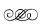

5. BÖLÜM
1. Göksel
Kafasına vurulana kadar dikkatin kendisine kaydığını fark etmedi Göksel, yemeğini yerken kulaklığını takmış, Ada’nın kendisine son verdiği CD’yi dinliyordu. Gece yarısına kadar süren kapışmaya ve Egemen’le olan gerginliğe rağmen müzik sayesinde huzurluydu. Ekiple birlikte, akşam boyunca göstericileri yine ara sokaklarda kovalamış, yakaladıklarını bir daha sokağa çıkmayacaklarına emin olacak şekilde tartaklamış, ortalık sakinleştikten sonra, göreve çıktıkları gecelerde evlerine dağılmadan önce uğradıkları çorbacıya gelmişlerdi. Bir zamanlar, gece yarısı eğlencesini sonlandıranların yeri olan bu çorbacı artık neredeyse sadece polislere hizmet veren bir yer olmuştu. Göksel CD çaları kapatırken Egemen, “Burada laf anlatıyoruz lan! Çıkar şunu!” dedi, birkaç saat önce olanlardan sonra hâlâ Göksel’e sinirliydi, “Hem bu teknoloji o kadar eskidi ki, sokaktaki orospu çocukları bunu görseler seni geçmişten geldin sanırlar ha!” diye ekledi abartılı ve rahatsız edici kahkahasıyla.
Egemen, “Yarın akşam da yürüyüş varmış! Bu seferki öğrenci birliğinin çağrısı. Yaşadık ha! Bir sürü çıtır çıkacak sokağa! Yarın akşam üniversite bölgesinde toplanacağız. Geç kalmak yok. Çıtır avı bu!” dedi ve hemen dibinde oturan asına, “Bu akşamki karıyı nasıl inlettim ama! Yanındaki cılız çocuk da ibne miydi neydi, ben kıza dayayınca bakışını gördün değil mi?” dedi. Çocuk da mecburi gülümseyip lokma alırken Egemen devam etti: “Kız giymiş daracık bir pantolon, üstünde uzun ceketi vardı ama ben kızı köşeye sürüklerken icabına baktım, ceketi kaldırıverdim, nah böyle çıktı kıçı, soktum elimi içeri, kız nasıl tepiniyor, azmış belli. Cılız, çelimsiz çocuk geldi yanıma sırtıma vuruyor ibne, tuttum çocuğu kenara savururken, ‘Bu orospuyu sikeyim sıra sana gelir, sıranı bekle’ dedim. Kız iyice hiddetlendi, elim de durmuyor, cılız ibne de gene saldırıya geçti ama sonra bizim Efgan koştu yardıma, önce ibneye bir çaktı, çocuğun suratından fışkıran kan nah bana kadar geldi” deyip ceketindeki kan lekesini gösterdi. Efgan’la gülüştüler. Efgan, “Copla vurdum, elimde kalacaktı sivrisinek!” diye ekledi. Egemen “Dur lan kesme, en heyecanlı yerine geldim... Ben kızı çevirdim, yapıştırdım bir kenara, girdim bacaklarının arasına, kaldırdım havaya, kız hafif, 16 falan daha. Başladım sürtünmeye, kız nasıl çığlık çığlığa! MOBESE’ler falan kapalı ya, apartmanın kapısı açılsa alacam karıyı içeri ama kapı açılmıyor! Kapının camını kırsam mı derken...” deyip Efgan’a döndü: “Geçen haftaki karıyı hatırlıyon mu! Aynı ordaki durum!” Sonra kendisine odaklanan 4 çocuğa anlatmaya devam etti: “Tam o sırada bu salak gelmez mi!” Göksel’i gösterdi. “Beni bir çekti. Abi gazeteciler geliyor diye! Ben de bıraktım kızı tabii, tabana kuvvet doğru sokağın başına ama sonra bir döneyim dedim, gazeteci falan yok. Geri döndüm hemen ama kız gitmişti. Zillere basıp apartmana girmişler.” Ekmekten bir lokma ağzına tıkıp kafasını sallarken “Eminim. Çünkü apartmanın ışığı yanıyordu, şimdi bu moda ya, bizden kaçanı eve alıyorlar! Ama eve alanlara da hesabını soracağız. Suça ortaklık etmek ne demekmiş göstereceğiz! Az kaldı!” dedi ve o iğrenç anılarını anlatmaya başladı yine. Ara sokaklardaki çoluk çocukları köşeye sıkıştırma yöntemlerini, kızların popolarını sıkıp kıyafetlerinin üstünden nasıl taciz ettiğini, sokağa çıkanların başlarına gelen her şeyi göze aldıklarını, hatta bu eylemci kızların tecavüze arandıklarını, hakkın, adaletin bahane olduğunu anlatıp durdu onu dinleyen diğerleri ara ara gülerken.
Bir ara sohbet o kadar iğrençleşti ki Göksel çocukluğunu hatırladı, kulaklığı takmak zorunda kaldı. Çünkü çocukluğunda kendi başına gelenlerin şimdi oturduğu bu masada nasıl da ballandırılarak anlatıldığını duymak fazlaydı. Kulaklığı takmak zorunda kalmıştı, kendi sakinliği ve yanındakilerin iyiliği için.
2. Ada
“Telefonu sakın kapatma! Sokağa çık, evin önünde yüzünü yola dön ve gözlerini kapat” dedi Tugay. Ada elindeki telefonu sıkı sıkı tutarak heyecanla indi aşağıya, ayakkabılarını giydi, çantasını ve ceketini aldı, sokağa çıktı, “Tamam, sokaktayım” dedi. Tugay “Bekle bir dakika... Tamam, şimdi kapat gözlerini... Kapattın mı?” diye sorguladı. Ada “Evet!” dedi heyecanla. Tugay “Sakın açma, kapat, bekle öyle... Sakın açma” dedi yine. Ada gözleri kapalı öylece bekledi, Tugay’ın karşısına çıkacağını düşünerek, heyecanlı. Önüne yanaşan aracın sesini duydu ama gözlerini açmadı çünkü Tugay hâlâ sakın açma deyip duruyordu. Aracın kapısının açılma sesini duydu, bekledi... Yanına kimse gelmeyince “Açayım mı artık?” diye sordu. Tugay “Aç” dedi.
Önünde duran son model kırmızı bir BMW ve arabanın yanında dimdik duran takım elbiseli, şapkalı bir adam, şoför...
Ada ne olduğunu anlayamadı, arabanın arka bölümüne yürüyüp arka koltukta oturan biri olup olmadığına baktı, kimse yoktu. Tugay neredeydi? Telefona “Nerdesin aşkım?” dedi. Tugay “Nasıl, beğendin mi?” diye sordu. Ama Ada emin olamadı. Tugay heyecanla “Tepki versene, arabayı beğendin mi?” diye sordu. Ada şaşkınlıkla “Evet, çok güzel de... Nasıl yani?” diyebildi. Olduğunu sandığı şeye inanamıyordu! Ona araba almış olamazdı! Tugay “Bu artık senin, şoförüyle birlikte!” dedi. Ada bir an sevinç çığlıklarıyla zıpladı, sonra heyecanını Tugay’la paylaşmak için kapıyı açıp arabaya bindi ama Tugay’ın çok işi vardı, gönderdiği kâğıtları imzalaması gerekiyordu, evraklar bir saat içinde kendisinde olmalıydı, bu kâğıtlar onun haklarını korumak içindi. Konuşacak zamanı yoktu, toplantıya girmeliydi. Araba Ada’yı Şadiye’nin evine bırakırken kâğıtları da şirkete getirecek, sonra onun yanına geri dönecekti. Ada, Şadiye’nin albümündeki son şarkıyı bugün finalize etmeliydi. Önümüzdeki hafta albümün lansmanı vardı.
Ada, Tugay’ın zamanını daha fazla almamak için onu dinleyip uslu bir kız gibi kapattı telefonu, hemen imzaladı 57 sayfalık anlaşmanın her sayfasını ve Şadiye’nin evine doğru yola koyuldu. Toplamda yaptığı 8 şarkının sonuncusunu gözden geçirecek ve akşam Tugay’ın evindeki kutlama davetine gidecekti. Çok büyük bir parti olacaktı. Ada çok mutluydu.
3. Özge
1,5 saattir oturduğu yerde hâlâ beklemedeydi. Kolhan burada beklemesini istemişti. Darbe’nin Londra’dan yayına başladığını, engellemeye rağmen sosyal medyada hızla yayılan son sayının skandal fotoğrafları yüzünden, insanların dergiye VPN13 üzerinden bağlanmaya başladığını duymuş olmalıydı, bakanlardan birinin evli, sofu oğlunun Rus sevgilisiyle çekilmiş müstehcen fotoğraflarını görmüş olmalıydı. Dakikalar geçtikçe işin ciddiyetini daha da anlar olmuştu Özge. Bugün, bu işteki son günü olmalıydı.
Ayağa kalktı Özge, daha fazla beklemeyecekti. Sekreterin yanına gidip, aşağıda bir sürü yapması gereken işi olduğunu, derginin yeni sayısının bu gece baskıya gireceğini, Sadık Bey çıktığında gerekirse kendisini çağırmasını söylerken kapı açıldı... Sadık kapıda dikilmiş, eliyle ona gel diyordu. Ciddiydi.
Dikleşerek içeri yürüdü Bilge, birazdan maruz kalacağı baskıya hazırlanarak. İçeride bir adam olduğunu görünce şaşırdı. Siyah takım elbiseli, uzun boylu, yakışıklı deneyemeyecek kadar düz kafalı, çirkin denemeyecek kadar fit duruşlu biriydi. Tanıdıktı... Özge ancak iyice yaklaştığında adamı nereden tanıdığını anladı. Muhalefet partisinin başkan yardımcısıydı. Politik pisliğin içinde temiz durmayı becerebilmiş biriydi ya da en azından iyi kamufle olmuştu, çünkü bu pisliğin içinde hayatta kalabilenlerin sadece virüsler olduğunu biliyordu Özge. Sadık onları tanıştırırken el sıkıştılar. Umut Bey, kendini tanıttıktan sonra açıkladı: “Bağlar bölgesinden üçüncü sıradan milletvekili adaylığınız açıklanacak Özge Hanım, hayırlı olsun!”
Özge ne diyeceğini bilemedi şok içinde adamla tekrar tokalaşırken. Ancak kendine gelebildiğinde içtenlikle teşekkür etti. Umut Bey, “Bana değil Murat Bey’e teşekkür etmek lazım” dedi. Özge kendisini çocuk gibi beceriksiz hissederek Sadık’a dönmüştü ki Sadık adamla tokalaşıp onu çıkışa doğru götürdü. Geride kalan Özge, ne yapması gerektiğini bilemeden öylece bekledi onlar uzaklaşırken. Etkilenmişti. Sadık’ın kendisine bu kadar sahip çıkması hayal değildi. Aylar öncesinde konuşulan bu konu sanki geçmişte kalmış bir sohbet gibiydi. Bir daha hiç açılmamış, hiçbir detay planlanmamıştı. Milletvekili çıkarma ihtimali olan siyasi partilerin hepsi aday adaylığı başvurularında bile ücret talep ediyordu. Resmi rakamlar her parti için farklıydı ama kadın ya da engelliyseniz aday adaylığınızın fiyatı daha düşüktü. İşte bu sistemdi meclise girenleri birer yolsuza dönüştüren, çünkü milletvekili olabilmek için çok daha büyük paralar verenler, adaylıklarını garantileyenler vardı, verdikleri paraları yatırım gibi görüp milletvekili oldukları andan itibaren yatırdıkları parayı, yani sermayelerini nasıl çıkaracaklarının, nasıl kâra geçeceklerinin peşine düşüyorlardı. Kâra geçenler bu fırsatlar yelpazesini keşfedip daha fazla nasıl kazanabileceklerini hesaplıyorlar ve meclisin katmanlarında adım adım yükselirken bu iğrenç sistemin koruyucusu haline geliyorlardı. Halkın sütüne konan sinekler gibiydiler, hangisinin ne sürede süte konacağı, en çok oy toplayan partinin başındaki büyük sinek tarafından karar veriliyordu, kaybeden daima halk oluyordu.
Sadık, Umut Bey’i uğurladıktan sonra geri döndü toplantı odasına, içeri girip hemen kapıyı kapattı ve güdümlenmiş adımlarla, kararlı Özge’ye yürüdü.
Sadık Murat Kolhan’ın adımları o kadar hızlı, hareketleri o kadar seriydi ki Özge, poposunu dayadığı masadan kalkıp doğruldu, her an her türlü harekete hazırlıklı... Neyse ki Sadık aynı serilikte Özge’nin hemen yanındaki sandalyeyi çekip oturdu ve kaykılıp bacak bacak üstüne attı. “E, beni akşam nereye yemeğe götüreceksin?” dedi güzel dişlerini sergileyen muhteşem bir gülümsemeyle, hemen dibinde ayakta dikilen Özge’nin tetikteki ifadesine bakıp eğlenirken.
4. Deniz
İnmek üzere olan güneşin sarılığında yeni mahsulleri kamyona yüklemeye başladıklarında jandarma geldi. Deniz yorgundu. Kimlik yoklaması yaptıklarını söylediler. Deniz’i fark edip ona kim olduğunu sordular. Deniz sakince kendini tanıtırken bölgede herkesçe tanınan Mustafa Abi, kendisinin misafiri olduğunu ekledi. Deniz’in kimliği yanında değildi ama kimlik numarası ezberindeydi. Numarayı söylerken jandarmalardan biri elindeki küçük alete girdi numarayı. Bekledi... Sonuç gelince teşekkür edip uzaklaştılar.
Acaba kimi arıyorlardı? Yükleme bittiğinde tarlanın yolunu tuttu Deniz, az da olsa işi vardı. Bir zamanlar Amerikalılara kiralanan tarlanın yanından geçerken anlatılanları hatırladı. Bu şirket daha önce ülkenin verimli arazilerinden bir kısmını 50 yıllığına, çok uygun bir fiyata kiralamış, sonra üzerinde yetiştirdikleri patateslerden önceleri hayret, sonraları dehşet verici ölçüde verim almışlardı. İlk sene topraktan normalin tam 28 katı daha fazla verim alınmış, ikinci seneyse bir mucize gibi topraktan alınan mahsul tam 42 katına çıkmıştı. Aslında ülke tarafından sevinçle karşılanabilecek bu haberi kimse ne gazetelerde okudu ne de haberlerde dinledi. Yabancı şirketin bunu bir sır olarak tutabilmek için ciddi para harcamasıysa, saf devlet otoriteleri tarafından, tarım dünyasındaki bu mucize keşfi korumak için alınan bir önlem olarak algılanmıştı belki.
Üçüncü yılda aynı toprak sadece 12 kat daha verimli çalışmış, dördüncü yıldaysa topraktan tek bir mahsul bile alınamamıştı. O bölgede yaşayan toprak sahiplerinin, topraklarının bir daha asla mahsul alınamayacak hale geldiğini anlaması 4 sene sonra olmuştu. Bölgeye yağan yağmurlar, topraktan daha fazla verim almak için yüklenen kimyasalların çevredeki diğer tarlalara yayılmasına neden olmuş ve çevre tarlalarda yetişen her türlü mahsul kışı atlatamadan heba olmuştu. Deniz olanları iyi biliyordu çünkü köylüler arasında en çok konuşulan konu buydu.
Bölge halkının toprak kanseri adını verdiği bu korkunç toprak hastalığı işte böyle girmişti ülkeye. Topraktan daha fazlasını almak için umut saçan bir süper güç ülkesinin girişimci, kalkındırıcı şirketi ve bu şirkete ülkeyi açan güya kalkındırıcı hükümet sayesinde.
Komik olan kısmıysa, yetiştirilen patatesler cips yapımında kullanılmış ve ülkenin halkına, özellikle de gençlere satılmıştı. Toprağı zehirleyip doğurganlığını yok edecek hale getiren bu kimyasalların içinde büyütülen lanetli patatesler ülkede en çok yenilen patates cipsiydi. Helikopterin tamamen gözden kaybolmasıyla Deniz’in düşünceleri de dağıldı. Az da olsa yapacak işi vardı.
5. Özge & Sadık Murat Kolhan
Çıkılan yemeğin akla mesajlar yüklemesini, ilişkiyi çıkılmaz bir yere getirmesini istemediğinden özellikle hazırlanmadı Özge. Gerçeklere odaklanmalıydı, Sadık Murat Kolhan savaştığı her şeyi temsil eden kurtarıcısıydı. Aklındaki çelişkinin kalbindeki heyecanı bastırmasını bekledi aynada kendine bakarken. İş çıkışına daha yarım saat vardı. İş çıkışı Sadık’ı alacak ve kendini en rahat hissettiği yere yemeğe götürecekti onu. İyi vakit geçirip geçirmediğini önemsemeyecekti, ona borçlu değildi ki! Onunla karşı karşıya oturacağı o masa bir arenaydı ve rakibi bu kadar etkileyici olan bir savaşçı mutlaka kendi arenasında olmak zorundaydı. Kaybedilen her savaşın kaynağıydı çekilen yabancılık. Yabancı hissetmeyeceği bir yer seçmeliydi! Suratını yıkadı Özge, saçlarını ıslatıp geriye attı. Yanında hiçbir malzeme olmadığından, eline aldığı sıvı sabunu azıcık ıslatarak geriye doğru taradı saçlarını. Sabun kuruyunca jöle gibi sertleşecekti... Odasına gidip mesai bitiminde onu aramaya karar verdi.
Mesai bitimine beş dakika kala ofis telefonu çaldı. Ahizeyi kaldırdığında Sadık Kolhan’ın sesi uyandırıcıydı. “Hazır mısın?” diyordu hissedilen bir gülümsemeyle. Özge cevap verdi: “Her zaman.” Kısa bir sessizlikten sonra Özge devam etti: “6.00’da kapının önünde buluşalım... İsterseniz odanızdan da alabilirim sizi, ne de olsa benim davetlimsiniz.”
Sadık’ın nefesini duydu önce, sonra sakin sesini: “Beni almanı çok isterim.”
Söylediği her kelimeye anlam yüklercesine konuşmuştu Sadık, Özge izin veremezdi buna, bu tuhaf enerjiyi hafifletmek istedi ama cevap vermek için de çok geçti çünkü saniyeler geçmişti, sesindeki resmiyeti bir ton daha artırarak “Görüşmek üzere” dedi ve Sadık’ın kapatmasını beklemeden kapattı telefonu. Sadık’ın tek bir kelime daha etmesine izin veremezdi. Bu geceyi atlatmalıydı. Bu adamın etkisinden sıyrılmalı ve onu asla kendine yaklaştırmamalıydı.
Kapıya doğru giderken ceketini unuttuğunu fark edip geri döndü. Sonra telefonunu unuttuğunu fark etti. Sonra bilgisayarını kapatmadığını hatırladı. Onun katına çıktığında Sadık asansörün önündeki bekleme koltuğunda oturmuş onu bekliyordu.
Bacak bacak üstüne atmış, oturduğu koltukta Özge’nin asansörden inişini izledi, düz erkeksi ayakkabıları, yakaları hafif kalkık, kolları kıvrılmış beyaz gömleği, parmağına asarak omzunda taşıdığı ceketi, geriye taranarak yüzünü iyice ortaya çıkaran kısa saçları, metrelerce uzaktan bile parlayan yeşil gözleri ve o umursamaz, kuru denemeyecek kadar pembe, sempatik denemeyecek kadar keskin gülümsemesi... Başka hiçbir kadında olmayan bu hali. Ayağa kalktı, ellerini cebine sokup yanına gelmesini bekledi. Özge yanına geldiğinde onu yanağından öpecekti ama Özge durdu, mesafeyi korudu, “Hazırsınız” dedi ve asansöre geri döndü.
Sadık bu hareketi beklemiyordu, bir an durakladı ama sonra hemen “Özge Hanım” dedi diğer taraftaki asansöre ilerlerken. Arka sokağa inen, Sadık’ın özel asansörüne geçtiler. Sadık parmak izini okutup -1’e basarken Özge 0’a bastı, “Araca gerek yok. Yemeğe ben götüreceğim sizi” dedi. Aşağıya inerlerken Sadık Özge’ye, Özge’yse camdan dışarı bakıyordu. Hatta bir ara tamamen Sadık’a arkasını döndü. Yere indiklerinde omzunda ceketi, hızla yürüdü Sadık’ın onu takip edeceğinden emin. Açılan duvarlardan geçtiklerinde durmadı Özge, Sadık’ın suratına dahi bakmadan onu bilgilendirirken “Buradan” diyerek yürümeye devam etti.
Şehrin her tarafında yürüyebilecek kadar güvende hissetmiyordu Sadık ama bunu nasıl açıklayabilirdi ki diye düşünürken Özge, Sadık’ın yüzüne sadece kısa bir an bakıp kafasını yürüdüğü yola çevirdi ve “Merak etme, benim yanımda güvendesin” dedi. Sadık gülümsedi, çünkü tam da böyle hissediyordu. Tehlikeye en yakın olduğun yerde güvende hissetmek ne tuhaftı.
Sokaklarda yürüyüp gökdelenlerle doldurulmuş bölgeyi geçtiler, gökdelenlerin arasında küçücük bahçesinde ineklerin, köpeklerin ve tavukların olduğu tuhaf evin önüne geldiler, yürümeye devam ederken Özge, “Bu evi çok seviyorum” dedi. Sadık, “Neden?” diye sordu. Özge, “Burada arazi artık çok kıymetli ama Emine Teyze inadına satmıyor” dedi. Sadık, “Tanır mısın Emine Teyze’yi?” diye sordu. Özge, “İradesine hayranlık duyduğum herkesi tanırım” diye cevap verdi.
Yürüyerek metroya ulaştılar, açılış törenine katıldığı o ilk günden beri ilk defa metroya bindi Sadık Murat Kolhan, her istediğine sahip olmanın verdiği büyüklükten kurtulmuş gibiydi, sanki ilk defa metroya sığabilmişti. Metro tünellerde giderken Özge sokak artistleri tarafından tünellerin duvarlarına yapılan resimlerin, trenin hızıyla sanki akan bir film gibi etki yaptığını gösterdi Sadık’a. İlk filmi fark edemeden kaçırmıştı Sadık ama ikinci filmi yakaladı: Şehrin altındaki küçük bir tohumun çatlayıp, filize, fidana ve sonra da dev kökleri olan kocaman bir ağaca dönüşmesini ve büyüdükçe genişleyerek hapishaneye benzeyen tüm binaları yıkmasını anlatıyordu çizim. Sonunda da bir yazı vardı Sadık’ın tamamını okuyamayıp ne olduğunu sorduğu ve Özge’nin ezbere bildiği: “Çatlama cesareti gösteren tohumlar adına!”
Metrodan inip yürüyerek geceye çıktılar. Hava iyice kararmıştı. Özge ceketini giymeden bir an duraklayıp “Üşürsen sana veririm” dedi bir şövalye edasında ama Sadık hemen karşıladı: “Üşüyeceğim en son yerdeyim.” Üstündeki ceketi çıkarıp omzuna astı. Özge, kendisine akan enerjiyi kesmek için hemen önüne döndü, ciddiliği belli olsun diye kaşlarını çattı ve yürürken “Az kaldı... Sahile indik mi geldik” dedi.
Caddeyi geçip yokuş aşağı inen parka daldılar, Sadık Özge’ye yaklaştıkça Özge hızlandı, Özge hızlandıkça Sadık ona yetişti, Sadık ona yetiştikçe Özge daha da hızlandı... Sahile indiklerinde sanki yarışır gibiydiler. Komikti. Özge Sadık’ın onu havada karada geçeceğini anlamış olarak durdu nefes nefese. Sadık gülümseyerek kafasını hayır anlamında salladı, kendisinin yarışılarak geçilmez olduğunu biliyordu. Özge nefes alırken elini beline koydu, sonra ilerideki kestaneciyi göstererek, “Bana kestane alır mısın?” dedi. Sadık Özge’nin kendisinden böyle bir şey isteyecek samimiyete gelmesine bir an şaşırsa da hemen kafasını evet anlamında sallayıp sanki biraz önce koşan kendisi değilmiş gibi dik, sakin adımlarla kestaneciye doğru yürüdü ve yürürken ancak anladı!
Özge depar almıştı, koşuyordu çünkü aradaki enerjiyi silmenin tek yolu sanki rekabetti. Elinde olsa bugünü hemen geçirebilseydi, geçmişe gömebilseydi. Bu adamın yanında kendini borçlu hissetmek eziyetti. İçinde uyanan ilginin davranışına, bakışına, gülüşüne yansımasını engellemek giderek ağırlaşacaktı. Kendine hatırlattı, bu adama asla teslim olmayacaktı! Ona hiçbir borcu yoktu!
Özge çok önden başlamış olsa da neredeyse aynı anda vardılar Çavuşun Yeri’ne, kapıya ilk değen Özge oldu. Kapının tokmağını tutup nefes almak için pervaza dayandı ve pervazın diğer köşesinde soluklanan Sadık’a bakıp güldü “Kaybettin” derken. Sadık da güldü, “Hilecisin” diye karşılık verirken. Özge, “Ben sadece durumu eşitledim!” dedi. Sadık bedenini tamamen Özge’ye çevirdiğinde gülmesi geçmiş, yerine sakin, anlamlı bir ifade gelmişti. İfadenin nasıl da kendisine odaklandığını gördü Özge... Görmeye dayanamayacağı bir ifadeydi bu! Kapıyı açıp şehrin en salaş ciğercisine girdi hemen bu umut dolu ifadeden kaçarcasına. Sadık Murat Kolhan’a hayatının şokunu ve aralarındaki farkın büyüklüğünü yaşatacağından emindi.
Hayırlı işler dileyip en dipteki masaya ilerlerken Sadık’a “Ben ısmarlıyorum ve param ancak buraya yetiyor!” dedi ama döndüğünde Sadık yanında değildi... Birbirlerini uzun süredir görmeyen iki dost gibi restoranın sahibi yaşlı Çavuş Amca’yla sarılıyorlardı.
Özge izlediği şeydeki gerçekliğe inanamadan oturdu yerine. Burada olmaktan nefret edeceğini sanmıştı Sadık’ın ama adam sevinçle karşılanıyor, sevgiyle etrafındakilere selam veriyordu şimdi, mutlu görünüyordu. Kendine hatırlattı Özge, kanallardan insanlara her an yalan söyleyen, gücün yanında olmak için her şeyi feda eden biriydi o! Zaten Çavuş Amca gibi badireler atlatmış, iyi bir adamı sarılacak kadar tanıyıp, buradaki özel yemekleri yemiş olup da bunca zenginliğine rağmen yardım bile etmemiş olması onun gerçeğini ortaya koyuyordu. Bu sempatik tavırlarıyla halkın adamıymış gibi kimi kandırıyordu! Şaşkınlıktan bir an sarkan omuzlarını hemen dikleştirdi Özge, yerine otururken aklını topladı. Yemek yiyecek, hesabı ödeyecek ve sonra oyalanmadan evine gidecekti.
Sadık yanında Çavuş Amca’yla geldi masaya. Özge’nin suratındaki bozulma o kadar belliydi ki Çavuş Amca “Kızım, iyi misin?” diye sorunca Özge, “Karnım çok aç” diye açıkladı. Masayı donatmak üzere Çavuş Amca mutfağa çekildiğinde Sadık, “N’oldu, moralin bozuk görünüyor Özge Hanım?” diye sorguladı keyifle yerine otururken. Özge umursamaz, kaşlarını kaldırıp “Söyledim ya, karnım acıktı” dedi. Sadık biliyordu Özge’nin neye bozulduğunu, anlayabiliyordu onu. Kendisinin yıllar önce geçtiği yerlerden Özge şimdi geçiyor ve geçilen bu yerleri sahipleniyordu. Sadık ekmeği bölüp önüne konulan mezelerden lokma alırken, “Bayılırım ciğere! Buradan iyisi yoktur” dedi. Özge şimdi daha da ciddileşmişti, kollarını önünde bağlamış, dümdüz bakıyordu Sadık’a, yüzündeki küçümseme ve rahatlama belirgindi. Sadık geriye yaslanıp lokmasını çiğnedi gram rahatsız olmadan, tam tersi keyiflenerek. “25 yıldır tanırım Çavuş Abi’yi. O zamanlar küçük bir el arabasında yapardı ciğeri” dedi, sustu. Durumu kurcalamak eğlenceliydi. Özge’nin konuşmak istediğini biliyordu. Bekledi. “Hani çok acıkmıştın Özge Hanım?” dedi masanın üzerindeki mezeleri işaret ederek. Özge hiddetini gülümsemeyle kamufle etmeye çalıştığı bir sesle “Madem 25 yıldır tanıyorsunuz, hem de çok seviyorsunuz, biraz yardım etseydiniz Çavuş Amca’ya, sevaba girerdiniz Sadık Bey” dedi. Burayı bilmemesine, hatta aşağılayıp yabancılık çekmesine katlanabilirdi, hatta öyle olsa hoşuna bile giderdi ama burayı bilen, bu lezzeti anlayan birinin umursamazlığı tiksindiriciydi. Katılmayacaktı bu oyuna, gerekirse kavga çıkartacak ve kalkıp gidecekti.
Sadık yok olmak istiyordu. Özge’nin adaletinde kaybolmak, onun iyiliğinde yeniden doğmak, onun geldiği kaynaktan gelmek, aktığı yere akmak, çatlama cesareti gösterebilmiş olmak... Omuzları düştü, Özge’nin kendisine hesap soran hesapsız suratına, parlayan yeşil gözlerine yaklaştı, fısıltıyla anlattı: “Çavuş Amca’ya yardım ettim, burayı önünde valesi bulunan bir restoran zincirine dönüştürmesini engelleyerek yardım ettim ona! Değer verdiğin bir şeyi yok etmek istiyorsan, yaratılan bu atmosferi kirletmek, bu lezzeti bozmak, o zaman parayla zehirlersin. Bense satın aldım ve hayatta kalmasını, aynen böyle var olabilmesini, kendisini koruyabilmesini sağladım. Şu an benim restoranımda yemek yiyorsun Özge Hanım” dedi. Geriye çekilip bardaklara su koyarken, “Her şeyi bildiğini sanmayı anlarım, toyluktur ama her şeyi anladığını sanmak! Bunu anlayamam çünkü salaklıktır!” dedi ve sustu, dümdüz Özge’nin bir nefes uzaklığındaki gözlerine baktı. Birlikte olduğu yüzlerce muhteşem güzellikteki kadından sonra öğrendiği bir şey vardı, bir kadının nasıl göründüğü değil nasıl hissettirdiğiydi erkeği esir alan. Bu kız, kendisini esir alabilecek ilk kadındı. Suyu kaldırıp Özge’ye küçük bir selam verip içti.
Özge söylenenleri hazmetmek için bir an bekledi, salak gibi hissediyordu, onca yer arasında burayı seçmiş olması büyük hataydı. “Restoranınla biraz ilgilensen fena olmaz. Tuvaletlerin durumu fena” deyip ekmekten bir lokma koparıp ağzına attı, hissettiği bu yakınlığı kavgaya dönüştürmenin fikrinde geziniyordu düşünceleri.
Yemekler gelince ekmeği elleriyle koparıp ortadaki tabaklardan yemeye başladılar. Sadık soru sorana kadar konuşmadılar. Sadık, “İnsan kendi için doğmaz mı? Kendi için yaşaması gerekmez mi? Niye bu feda ediş, nereden geliyor bu Don Kişotluk? Kendi hayatını yaşamak, mutlu olmak yerine, neden bunca sıkıntının içine atmak istiyorsun kendini?” demişti.
Özge düşündü... Bu gece bir sürü şeyden konuşabileceklerini hesaplamıştı ama Kolhan’ın kendisini buradan yakalamak isteyeceğini hesaplayamamıştı. Cevaplamaya hazır olmadığın soruya soruyla cevap vermek en iyi cevaptı: “İnsan insan olmak için doğmaz mı? Korkmadan doğru olduğuna inandığı şeyi yapması gerekmez mi? Bunca sıkıntı varken, kendi hayatını yaşayabileceğin, etrafında olan bunca adaletsizliğe rağmen mutlu olabileceğin yalanını nasıl söyleyebiliyorsun kendine?”
Sadık suratına oturan gülümsemeyi engelleyemedi. Kızın inatçılığı bile sevimliydi. Kimseyi etrafında dolandırmayan küçük bir kale gibiydi. İçeri girmek istiyorsanız doğru kapıya gidip niyetinizi söylemek zorundaydınız. Sadık kapıyı çalarcasına konuya girdi: “Niye kadınlarla birlikte oluyorsun?”
Özge gülümsedi, Sadık’ın bunu bildiğine şaşırmadı, hatta bilmese şaşardı. Ağzındaki lokmayı yuttuktan sonra cevapladı: “Peki ya sen?”
Sadık bir kahkaha patlattı: “Nedeni çok ortada değil mi?”
Özge, “Ben de sana aynı şeyi söyleyebilirim” diye çıkıştı diğer lokmayı alırken. Sadık, “Anlat! Bilmek istiyorum” dedi. Özge, “Neden?” diye sordu. Sadık, “Çünkü ilgimi çekiyorsun” diye cevap verdi. Özge, “Nedeni çok ortada: Hormonlarımla savaşacak kadar evrimleşmedim henüz” diye açıkladı. Sadık, “Ama lezbiyen değilsin” diye çıkıştı. Özge, “Nereden biliyorsun?” diye kurcaladı. Sadık, “Hakkında her şeyi bildiğimi biliyorsun” dedi. Özge meydan okurcasına kaşlarını kaldırıp bekleyince Sadık öne eğilip, “Bir lezbiyen senin seyrettiğin pornoları seyretmez” diye fısıldadı. Özge sudan bir yudum almadan önce “Vauv!” diye tepki verdi, sonra “Bu kadar açık olduğuna sevindim, bu gece uyumak yok! Eve gidince kameraları nereye koyduğunuzu bulacağım” diye tepki verdi hiç gülmeden. Sadık, “Kamera falan yok, çok önce bir kez internet trafiğini çıkarmıştı bizim çocuklar, oradan fark ettim” dedi. Özge “Fark ettin! Siteye girip filmi izleme zahmeti mi fark etmek! Senin ciddi sorunların var Sadık Murat Kolhan” dedi. Sadık sadece gülümsedi, geriye yaslandı ve birkaç saniye sonra “Biliyorum” dedi ve sustu. Özge’yle birbirlerine baktılar, ta ki Özge konuşana kadar.
Özge ekonomi toplantısında konuşan biri gibi düz, ifadesiz, “Seninle flört etmek istemiyorum” dedi ve işaretparmağıyla bir onu bir kendisini göstererek “Bu... bu bende çalışmaz. Seni temin ederim, diğer kadınlarla yaşadığın şeyleri bende bulmazsın!” dediğinde Sadık mırıldandı: “Ona eminim.”
Özge sustu, ellerini yine önünde bağladı, dikkatle baktı Sadık’a “Niye?” diye hesap sordu, sinirlenmek istiyordu. Sadık, “Ne niye?” diye sorguladı. Özge kaşlarını çatıp öne eğilerek, “Tüm bu çaban! Zaten her şeye sahipsin” dedi.
Sadık, “Her şey çok değersiz” diye cevap verdi. Özge, “Bir şey neden değerlidir? Sen ona değer verdiğin için. Sahip olduğun her şeyi değersizleştiren sensin!” dedi meydan okurcasına.
Sadık, “Bu kadar basit değil” dedi gözlerini ondan ayırmadan. Özge, “Söylediğim şey zaten basit değil. Anlayabilmen bile mucize olurdu” diye iğneledi. Sadık öne eğilip sessizce sordu: “Bilmek istiyorum... Neden kadınlarla birlikte oluyorsun?” Özge öne eğildi, önce onun gözlerine baktı ve sonra kulağına yaklaşıp, “Senin gibi erkekler yüzünden” dedi fısıldayarak, sonra hafifçe geri çekildi.
Sadık, “Bu doğru değil, bunu sen de biliyorsun” dedi etkilenmişti ama kendinden de çok emindi. Özge, “Sen bir koleksiyoncusun, bense bir deneyimci. Sen biriktirir değersizleştirirsin, ben yaşayarak hakkını veririm. Sen tüketirsin, ben yüceltirim” dedi.
Sadık mırıldandı: “Sanki sana uzanıp dokunsam yok olacaksın.” Özge, “Hayır... Değersizleşeceğim sadece” dedi, sonra derin bir nefes alıp geriye yaslanırken gülerek, “Ayrıca seni çekici bile bulmuyorum” diye itiraz etti.
Sadık, “Bunun doğru olmadığını sen de biliyorsun” dedi yine hiç kıpırdamadan, gayet ciddiydi. Özge gülmek istedi ama gülemedi, gülmesinin sahteliği Sadık’ın kendine dikilen gözlerinin şiddetiyle kesildi.
Zenginlikten gelip tanık olduğu yoklukla adalet savaşçısına dönen Özge ve yokluktan gelip tanık olduğu zenginlikle köleliğe hizmet eden Sadık, zıtlıkların dünyasında birbirlerinin gözlerinin içine baktılar evrendeki dengeyi onaylarcasına.
6. Ada
Gözlerini aralamak için bile beynine yalvarması gerekti. Niye sarsılıyordu? Kafasını kaldırmaya çalıştı ama imkânsızdı, beyni zonkluyordu. Derin bir nefes alıp kaşlarını kaldırarak gözlerini açılmaları için zorladı. Uğultu şeklinde gelen sesler ve bu sallantının ne olduğunu anlamalıydı. Zorlanarak dirseklerinin üzerine kaldırdı bedenini, çıplak vücudu örtüsüz üşümüştü. Tüyleri diken dikendi, üzerinde bir tek sutyeni vardı. Yatağın diğer tarafında Tugay’ı gördü. Yatağa yatırdığı şu manken kızın üstündeydi. Dün akşamki grup seksten sonra bu görüntüyü normal karşılaması gerekirdi belki ama iğrenç hissetti. Zorlanarak da olsa hemen kalktı. Banyoya girdiğinde tuvalete oturup işedi, su içmeliydi, sonra suratını yıkamadan önce köşedeki tepsinin üzerinde hazırlanmış kokainden iki sıra çekti. Bankodan destek alıp bedeninin kimyasının değişmesini bekledi. Kafasını kaldırdığında aynadaki yansımasıyla yüz yüze geldi... Ne kadar da zayıflamıştı. Hoşuna gitti. Hafiflediğini düşündü, her çektiği sırayla bir adım daha kendine ihanet ettiğini düşünmeden. Suratını yıkadı. Yere düşmüş havluyu alıp kurulandı. Tugay’ın kocaman bornozunu giyip banyodan çıktı. Bu manken kızın yanında pek de güzel sayılmazdı ama olsun, onda kimsede olmayan bir şey vardı: müzik. Yatak odasına geçtiğinde hâlâ sevişiyorlardı, tiksintisinin kızgınlığa dönüştüğünü hissederken salona gitti. Dün akşamki partiden sonra Tugay ondan bunu hediye olarak istemişti ama gece boyunca Ada sanki sadece bir izleyiciydi. Onlara katılmaya çalışsa da Tugay’ın ilgisi daha çok o kaltak mankendeydi. Salondaki deri koltuğa oturdu sakinleşmek istiyordu, yoksa... Yoksa ne yapabilirdi ki? Sakinleşmeyip ne yapacaktı! Tugay’ı tam bulmuşken kaybedemezdi! Kalktı, çok huzursuzdu, balkona çıktı. Manzarada kendine gelmeye çalıştı. Burası onun eviydi! İçeri gitmeli, erkeğinin ilgisini o manken kızdan alabilmeliydi! Yatak odasına gitmek için cesaretini toplarken yüzünü salona döndü, piyanoyu gördü. Bornozunu kavrayan elleri gevşedi, salona geçti, piyanoya gitti, pufa oturdu ve birkaç notaya bastı, içerden gelen inleme sesleri artmıştı ve Ada Rachmaninov’un 2 No.lu konçertosunu C minörde14 çalmaya başladı. Elleri, sanki düşünce hızında piyanonun tuşlarında gezerken bakışını bir saniye yatak odasının kapısından ayırmadan çaldı, içindeki tüm ilhamı, sahip olduğu yeteneğin her damlasını vermeye hazırdı: Yeter ki o, kızı bırakıp odadan çıksın!
Tugay odadan çıktı. Ada hemen bakışını piyanoya indirdi. Onun kendisini izlemesine izin verdi. Tugay çıplak, yaşadığı boşalmadan doymuş, yorgun, piyanonun başında Ada’yı izledi. Muhteşemdi. Ada kafasını kaldırıp gülümseyerek baktı ona, müziğin onu baştan çıkarmasında rahatlayarak ve onun anlayabileceği şekilde mırıldandı: “Kızı gönder.”
Kızın evden gitmesi 10 dakika sürdü, Ada sığındığı müzikle sanki o 10 dakikada büyüdü, gelişti... Müziği kullanmayı öğrendi. Bu geceden sonra artık tamamen değişmişti. Muhteşem hissetti en sonunda kendisini tercih eden bir erkeğe sahip olduğu için.
7. Göksel
Daha önceki mahalle grupları gibi değildi öğrenciler, onları dağıtmak zordu. Sloganlar atıp yürüyorlar, şiddet gördükleri yerde de karşılık vermiyor, kaçıyorlardı. Tek problem hemen dağılmalarına rağmen hemen yeniden toplanıyor olmalarıydı. Direniyor ama çatışmıyorlardı.
Sokağa vardıklarında MOBESE kameraları kapanmış mı diye merkezi arayıp teyit aldı Egemen. Kapanmıştı, her şey yolundaydı. Kalabalık toplanana kadar beklemede kalmaları, sonra kalabalığı ara sokaklara doğru sürüp bölmeleri planlanmıştı her zamanki gibi. TOMA’ları görünce işe koyulacaklardı.
TOMA’lar gelene kadar ikiye bölünüp üç kişilik iki grup halinde, avare avare sokakları dolandılar. Egemen, Çocuk Esirgeme Kurumu’ndan iki genci yanına alırken Göksel de Efgan’ın grubunda kaldı. Kulaklığını taktığı sürece nerede olduğu fark etmezdi, nerede olursa olsun müzikle daima kendi dünyasındaydı. TOMA’ların yola çıktığı haberini alınca meydanda buluştular. Sonra av başladı.
Kalabalığın arasına sivil olarak girenler işaretle birlikte, kalabalığı bölecek şekilde sis bombalarını ateşleyip yere bıraktılar. Çıkan dumanı zehirli gaz sanan öğrenciler bir anda kaçışmaya başladılar. Kaçışmalar aynı yöne olunca, kitleyi bölmek için kurşun mermiler sıkıldı aradaki beyaz gömleklilerden ve öğrenciler sokaklara daldı... Anacaddelere bağlanan sokak çıkışlarında bekleyen polisler, peşlerinde de beyaz gömlekliler.
Gençler her şeye rağmen yine toplanıp sloganlar atarak yürüyor, şehrin bir ucundan başladıkları yürüyüşe şehrin merkezindeki meydana varmak için devam ediyorlardı. Ellerindeki tek güç kalplerindeki adalet duygusu, akıllarındaki tek ölçü haktı. Tarihin sokaklarda yazıldığını, kitaplarda değiştirildiğini, okullarda unutturulduğunu bilmeden, önemsemeden, hiç ilgilenmeden amirini izledi Göksel. Ara sokaklarda gece boyunca gezindiler, gördükleri küçük grupları tartaklayıp, büyük grupların arasına sızıp vandalizmin doruklarına çıktılar, kendilerini engellemeye kalkanlara saldırdılar, Egemen’in elindeki listedeki, sokaktakilere yardım eden mağazaların camlarını kırıp yağmaladılar. Kulaklığından ruhuna akan müzik anlamsızlığın iyice altını çizerken otomatik pilotta, minimum çabada kendinden bekleneni yaptı Göksel. Yakaladıkları çocukları artık gözaltına falan da almıyorlardı. “Öldürmeyin, kırın” demişti başkan.
Egemen Amir, kulaklığı çıkarmasını emredene kadar her şey yolunda sayılırdı. Göksel tereddüt edince, kulaklığı çekip kendisi çıkarmış, sonra da yanına almıştı. Müziği kesilince hayatın tüm çirkinliği bindi Göksel’in aklına.
Bir grubun peşinden koşarak daldılar sokağa, anacaddeye bağlanan sokakta köşeye sıkışmış üç genci fark ettiler. Çocuklar anacaddede toplanmış TOMA’lardan nasıl sıyrılacaklarını hesaplıyorlardı. Egemen çocuklara doğru giderken beline bağladığı ince halatı çözdü. Elindeki halatı havadan indirip asfalta vurduğunda, etraftaki gürültüye rağmen bir şaklama duyuldu. Şaklamanın sesiyle arkalarına dönen çocuklar Egemen’in kendilerine doğru geldiğini ve elindeki halatı bir kırbaç gibi yere vurduğunu görüp irkildiler ama kaçamadılar, sokağın ilerisinde ellerindeki gaz fitillerini insanların başına, gözüne isabet ettirerek ateşleyen çevik kuvvet ekibiyle elindeki halatı kırbaç gibi kullanan Egemen’in arasında kalmışlardı, bir seçim yaptılar ve elleriyle başlarını koruyarak Egemen’den sıyrılma umuduyla ona doğru koştular. Yanından geçen ilk çocuğu yakaladı Egemen ama çocuk sıyrılmayı başardı, sonraki çocuk da arada kaynayıp kaçtı ama üçüncüye indirdi halatı, kafasını koruyan çocuğun elinin üstüde halatın darbesiyle yara açıldı. Ama Egemen durmadı, halatı bir daha indirdi, sonra tekmeyle kendi terapisine devam etti. Hayatı boyunca yaşadığı tüm adaletsizliğin hıncını alırcasına tekme tokat girdi çocuğa. Bir tek acımasızlığın fakirliği yenebileceğini öğretmişti ona yaşadıkları, pazarlarda sebze satan babasının nasıl da horlandığını izleyerek büyümüştü, okulun önünde simit sattığı yıllarda okula giden kendi yaşıtlarının dalga geçmesiyle yaralanmıştı çocuk ruhu, gerçi birkaç tanesini fena dövmüştü yakaladığında ama çocukların anne ve babaları yüzünden simit satamaz olmuştu artık. Eğitimsiz, sevgisiz, sahipsiz bir çocuğun yaşayabileceği her tacizi görmüştü Egemen. Tacizle büyümüş, tacizciye dönüşmüştü. Asla ait hissetmemişti güya koruması için kendisine emanet edilen bu halka kendini. Hesap sormak istiyordu! Niye sahip çıkılmadığının, hor görüldüğünün, aşağılandığının, sevilmediğinin hesabını! Kendisinden alınan hakların hesabını! Hesap sormaya yeminli, hevesli herkes gibi, sonunda hesabını sorduğu şeye dönüşmüştü.
Halatı bir daha indirebilmek için iki adım geri çekilmişti ki kolu takıldı, döndüğünde Göksel’in kolunu tuttuğunu gördü. Göksel, “Abi şuradalar!” diye heyecanla yolun diğer ucunu gösteriyordu. Yolun diğer ucunda kimse yoktu ama diğer tarafa koşmaya başlayan Göksel’in “Kaçıyorlar. Çabuk!” diye bağırması onu ikna etti, yerdeki yaralı çocuğu bırakıp Göksel’in peşinden gitti.
Belki köyünden hiç çıkmasa, yokluk yüzünden şehre gelmek zorunda bırakılmasa her şey çok farklı olabilirdi, bu kadar nefret dolmazdı içi. Gözlerini kapadığında, yazın sürüleri çıkardığı yaylaları düşünür olmuştu. Önce hayvancılığa yüklenen vergiyle sürüler gitmiş, sonra açlık gelmişti. Çare bulacağını sandığı o çocuk aklıyla ne kadar da zavallıydı; o zamanki zavallılığı, acizliği ne zaman aklına gelse öfke patlamaları yaşardı. Bu yüzden karısından bile ayrılmak zorunda kalmıştı. Eşitsizliğin nefretini bir kez almıştı içine, artık nefretin sapkınlığında nefes alan birine dönüşmüştü.
Tam sokaktan çıkacaktı ki çöp bidonlarının konması için bırakılan girintide bir şey gördü. Bir kız konteynırın arkasına saklanmıştı. Biraz önce dövdüğü oğlanın kız arkadaşı olmalıydı. Hiddetle çekti konteynırı, kızı tek hamlede yakaladı. Önce sert bir tokat attı, sonra kendine çekti.
Egemen’in kendisini takip etmediğini anlayıp hemen sokağa geri döndü Göksel. Sokak ilk başta boştu ama çöp bidonlarının yanından gelen çığlık Göksel’i uyardı. Sese doğru ilerleyince Egemen’in bir kızı dövdüğünü gördü. Gece boyunca koşmaktan yorulmuştu, peki bu adam ne zaman yorulacaktı! İyice yaklaştığında Egemen kıza sürtünüp “Orospu! Bunu mu istiyorsun ha!” dedi ve kızı tokatlayıp sersemlettikten sonra üzerindeki ceketi açmaya çalıştı. Boğuşmaya çalışan kızın çantası düştü, içindekiler yere saçıldı. Göksel Egemen’i kolundan tutup çekti ama Egemen kolunu kurtarıp kendisini çekenin Göksel olduğunu görünce sokağın başını tut diye emir verdi. Göksel durumun parçası olmak istemeyeceği, sonrasında başını ciddi derde sokacağını bildiği bir şeye doğru gittiğini görebiliyordu. Egemen kızı çekiştirirken kızın boynunda asılı olan bir şey fırladı, Göksel’e çarptı ve yere düştü. Kızın kulaklığıydı. Eğilip aldı kulaklığı Göksel, kablonun diğer ucu kızın bedenine uzanıyordu, müzik çalar ceketinin cebinde olmalıydı. Kızın çığlığı kesilince Göksel ona baktı, Egemen paltonun bir kolunu çıkarmayı başarmış, bir eliyle kızın ağzını tıkarken diğer elini kızın bluzundan içeri sokmuş, göğsünü avuçluyordu. Göksel kulaklığı kulağına götürdü, dünyası değişti.
Müziğe ne kadar maruz kaldığını bilmiyordu ama Egemen’in boynunu kırması 6 saniye sürmüştü.
Müziği otomatik olarak kulağına götürmüş, çalan parçanın ne olduğunu anlamak istemişti. Müzik içine işlerken kıza bakmıştı, kendisi gibi müzikle var olabilen birini görmüştü. Egemen’in ellerinden kurtulmaya çalışan, bedeninde hayat sanki yokmuşçasına vücudu yağmalanan bu kız, kendisi gibi hayatı anlamlandırmaya çalışan biriydi. Çocuklukta kendisine yapıldığı gibi yağmalanıyordu bu kız da şimdi. Müziği anlayabilen kimsenin yağmalanmasına izin veremezdi! Kulaklığı bıraktı önce, sonra Egemen’i saçlarından tutup kızdan ayırdı. Ne olduğunu anlamaya çalışan Egemen’in itirazları küfürlerine karıştı. Diziyle Egemen’in hayalarına ilk darbeyi indirdi Göksel kendisine savurduğu yumruktan çekilirken. İki büklüm olan bedenin yanına geçip aşağı eğilen boynunu tuttu ve çevirip kırdı. Egemen’in bedeni yere düşerken yanlarında olanları izleyen kızın donmuş, şokta, kilit hali hep aklında kalacaktı.
Sakince eğilip kızın çantasını topladı, kulaklığı da alıp çantayla birlikte kıza uzattı. Boğuşmadan yüzü çizikler içinde, üstü başı yırtılmış, yanağı şimdiden ciddi morarmış kızla göz göze geldiler. Kızın dudakları titredi... Konuşamadı. Kekeledi, kelimeler çıkmadı. Göksel uzattığı çanta ve kulaklığı kızın eline tutuşturdu. Kız eşyalarını alırken konuşmaya çalıştı yine ama tek kelime edemedi. Göksel eğilip Egemen’den kendi kulaklığını aldı ve oradan uzaklaşırken müziğini kulağına taktı, rahatlamıştı. Eve gitmeye karar verdi. Köpekleri çok acıkmış olmalıydı.
8. Sadık Murat Kolhan
Boşalmanın hemen ardından yine gerçekliğin tatsızlığıyla baş başa kalmaya başladı Sadık. Çok uzun süredir her boşalmadan sonra yaşadığı bir duyguydu bu; amaçsızlık. Kan basıncının düşmesiyle erkekliği küçülmeye başlamıştı ama asıl küçülen hayata olan ilgisiydi aslında. Bu ilgi azaldıkça etrafındaki her şeyin önemini de beraberinde azaltıyordu.
Elleriyle kavradığı güzel kalçaya baktı, biraz önce kendisine yoğun bir doyum veren bu kalça şimdi hareketsiz ve anlamsız duruyordu avuçlarının arasında, gözlerini kalçadan kaydırarak pürüzsüz bronz sırtın üstünde gezdirdi, erkekliği sönse de hâlâ kızın içindeydi. Gözleri, yeşilin kırmızıyla mühürlendiği, biraz önce ağlamış olan o ıslak gözlerle buluşuncaya kadar amaçsızlık içindeydi. O buluşma kıvılcım oldu yine. Özge’nin kafasını ona doğru çevirmesiyle ateşlenen fitil, Sadık’ın içinde merkeze doğru yanmaya başladı sanki. Kalçanın güzel, pürüzsüz dokusunu hissetti elleriyle sıkarak gözlerini Özge’nin suratından ayırmadan. Ağlamaktan kızarmış yeşil gözleri bronz teninde parlıyordu ve o gözlerin yansıttığı acıyan ruh, Sadık’ın erkekliğindeki kan basıncının artmasına neden oldu. Özge’nin suratındaki beliren gerilime kendisinin yol açtığını biliyordu, çünkü onun içinde büyüyordu, ellerinin arasındaki kalçayı iyice kavradı. Özge’nin içinden çıkmak istemiyordu ve kızı iyice kendine çekti. Dengesini sağlamaya çalışan kız, refleks olarak sağ elini, arkasında kalçasını sıkıca tutan Sadık’ın sağ elinin üstüne koydu. Kızın refleksini fırsat bilip kolunu kavradı Sadık, tutup iyice çekti kendine. Çekilen Özge dikleşti ve suratı Sadık’a doğru savruldu. Sadık kontrolsüz bir zevk içinde Özge’nin içine iki kere ittirdi kendini, sonra sağ eliyle kızın kafasını sıkıca tutup öpmek için çok uzun süre beklediği o dudaklara yapıştı. Yumuşak, doğal ve emilesi bir etkiyle emmeye başladı dudaklarını. Hayatında ilk defa aldığı zevk mantığını yenmişti ve o an öptüğü dudaktan başka hiçbir şey düşünmeden öpmeye devam etti Özge’yi, ta ki uyanana kadar!
Gecenin karanlığında nefes nefese uyandı Sadık ve hemen kalktı yataktan. Nerede olduğunu anlamaya çalıştı. Kendi yatak odasındaydı. Yalnızdı. Üstüne yapışan pijamasına baktı, karanlıkta pek bir şey görülmüyordu ama ne olduğunu anlamıştı. Üstü yapış yapıştı.
Banyoya geçip ışığı yaktı, pijamasını çıkardı. Çırılçıplak dikildi aynanın önünde. Dikkatle baktı kendine. 20 yıldır uykusunda boşalmamıştı.
Gözlerini kapadığında Özge’nin yemekten kalkıp gidişi geldi aklına. “Oynadığın bu oyun ikimize de zarar verecek” demişti Sadık, çok ciddiydi. Özge’nin bardağın dibindeki suyu içmesini, ağzını silip ayağa kalkmasını ve konuşmasını düşündü... Suratına bir gülümseme yayıldı. Gördüğü şeyin tam da gördüğü gibi olduğunu onaylayan bir gülümsemeydi bu. “Oyun! Sizin sorununuz oyun oynamamam değil, sizin oynadığınız oyunu oynamıyor olmam. O oyunda bir tek siz kazanabilirsiniz ve açıkçası eğlenceli bile değil” demişti Özge kapıdan çıkıp gitmeden önce.
Sadık banyodaki küçük buzdolabından su alıp tek dikişte içti. Hızlıca duşunu aldı ama uykusu kaçmıştı. Salona gidip televizyonları açtı. Yan yana monte edilmiş 8 televizyon aynı anda açıldı. Sahip olduğu tüm kanallar ve rakipleri tek hamlede karşısındaydı. Sırayla seçtiği kanalların sesini yükseltip gece yarısı yayınlanan haber tekrarlarını izledi. Hükümete destek için söylenen yalanlar o kadar abartılıydı ki inandırıcılıkları kalmamıştı. Ama yine de her şey yolundaydı... Özge’nin varlığının yarattığı sarsıntı dışında.
Hesaplayamadığı bir şekilde girmişti hayatına Özge ve kontrol edemediği şekilde büyüyordu içinde. Darbe’nin sunucularına el kondurtması, durumun kontrolünden çıkmasına neden olacak bir olaylar zincirini başlatmıştı. Darbe’nin halk arasındaki yayılışını takip etmek heyecan vericiydi, üzerinize doğru hızla gelen bir treni izlemek gibi. Kurumlarda çalışan, yapılan pisliklere ortak olanlar bile Darbe’ye haber, delil gönderir olmuştu. Yoksa bu kadar detaylı bilgiyi toplaması, fotoğraflara ulaşması imkânsızdı Özge’nin. Ama kendisinin bildiğini bilmiyordu diğerleri. Darbe’yi dış güçlerin beslediğini düşünenler vardı hükümette. Özge’nin adının bulunmaması için tüm yolları kapatmıştı Sadık. Kendisini baştan çıkaran şey, diğerlerinin Özge’yi ortadan kaldırmasına neden olabilecek güçteydi. Özge’nin Darbe’den vazgeçeceğini, parasızlıktan nasılsa hareket edemeyeceğini sanması hataydı. Böylesine bir iradeye sahip bir dişi ancak öldürülürse engellenebilirdi. Bu düşünceyle suratı gerildi. Yüzyıllardır “dişileri” kontrol altına alabilmek için yapılan onca şeyden sonra tek tük de olsa hâlâ var olmaları mucizeydi. Yapılan cadı avları geldi aklına, bundan birkaç yüzyıl önce yaşamış olsa Özge yakılırdı, hissettiği karmaşayla gözlerini kapadı Sadık. Adaletin kıyımı binlerce yıldır devam ediyordu. Adalet isteyen herkes bir bir cezalandırılıyor, aldıkları cezalarla, hayatları ibret olacak hikâyelere dönüştürülüyordu. Gözlerini açtı. Onu son sürat ilerlediği bu ibret hikâyesinden söküp sisteme nasıl dahil edeceğini düşünmeye başladı yine.
Milletvekilliği iyi bir başlangıçtı. Milyonların hakkının onlarcası tarafından yağmalandığı yerdi meclis. Halkın, hakkı korumak için canını feda ederek kurduğu demokrasi, yönetenlerin pezevenkliğini yaptığı bir fahişeye dönüşmüş, gücü olana hizmet eder olmuştu. Dinin bile pazarlandığı bu kurulumda, demokrasiye edilen tecavüz pek de önemsizdi. Sadık bıkkındı... Milletvekilliği Özge’ye iyi gelecekti, savaşmaya çalıştığı şeyin nasıl da köklü olduğunu anlamasını sağlayacak ve o güzel, narin bedenindeki adalet ateşini söndürecekti. Mimlenip öldürülmesinden daha iyiydi. Milletvekilliği Özge’yi sakinleştirecekti. Savaş naralarını dindirecek, başka türlüsünün mümkün olmadığını anlamasını sağlayacaktı. Birkaç sene içinde, tehlikedense dosta dönüşecekti, Sadık’ın koruyabileceği bir dosta... Kullanabileceği bir dosta.
Bu sistemin kurulmasında çok çalışmıştı Sadık, üzerine düşen tüm görevi yapmış, emirlere harfiyen uymuş ve söylemesi gereken tüm yalanları yerinde ve zamanında söylemiş, karşısına çıkan her şeyi ezmişti. Günbegün otomatik pilotta sisteme hizmet eden bir makineye dönüştüğünü düşündü. Sahip olduğu gücün asla kendisine ait olmadığı, en ufak bir yanlışında her şeyin elinden alınacağı sistem tarafından hep hatırlatılmıştı kendisine. Güce hizmet etmek adına her türlüsünü göze alan birçoklarının düştüğü “güce sahip olma” yanılgısına düşmediğinden işini iyi yapıyordu. Yönettiği medya, bu oluşumun en güçlü ürünü ve silahıydı. Gerçeği istediği gibi kamufle ederek istenilen gerçekliği yaratabildiği sihirli bir kutuydu televizyonlar. Her evdeydi Sadık, her akılda ve fikirde. Hükümetin başa gelmesine hizmet etmekle kalmamış, yıllarca yolsuzlukların kamufle edilip, aslında batmış olan ekonominin sanki çok iyiymiş gibi gösterilmesinde de büyük başarı göstermişti. Böylesine minnet duyulması gereken başarının karşılığında belki bir sürü imtiyaza sahip olmuştu ama iyice yoldan çıkan sistemin giderek paranoyaklaşan yapısı ona da dokunmaya başlamıştı.
Kontrol edilmesi zordu Özge’nin, satın alınması imkânsızdı ama muhalefette tutulduğu sürece çok da etkili olabilirdi. Kadın olması zaten bu dönemde ciddi bir avantajdı. Mecliste oturanlar milletin değil Sadık gibilerin vekilleriydi. Özge’nin içindeki savaşçıyı seçilmiş bilgilerle besleyip kendi gönüllü askerine dönüştürdüğünü düşündükçe dudaklarını ısırdı, ona hem sahip olmak hem de o çok değerli vahşiliğini korumak... Bundan daha tahrik edici ne vardı! Planladığı şeyin kontrolden çıkıp her şeyi değiştireceğini bilse acaba yine de yapar mıydı?
9. Can Manay
Sıyrılan derisinin altından parça parça gözüken et önemli değildi ama yüzükparmağı bileğine bağlayan kemiğin ucu derisinden çıkmak üzereydi. Gecenin karanlığında bile belliydi. Yanlış atmıştı bu son yumruğu. Adamı yere yıkmıştı ama kemiğini de kesin kırmıştı. Çıldırdı Can. Suratından akan kanın etkisiyle önünü göremeyen adama tekme atmaya başladı. Adam bedenini sürüyüp geri çekilip arabanın kapısını açmaya çalışıyordu, Can ayakkabısının topuğunu kullanmaya karar vermişti ki arkasından birinin onu tuttuğunu fark etti. Etrafını bir anda saran eller onu adamdan uzaklaştırdılar. Ellerin sahibine döndü hiddetle, polis olduğunu görünce dişlerini sıktı, geçen haftalarda saldırdığı 2 polisi susturmak için zaten ciddi para ödemişti, bir üçüncüsüne yeri yoktu. Sustu. Sakinleşmek için elleriyle saçını karıştırırken sanki biraz önce yerdeki adamı tekmeleyen vahşi kendisi değilmiş gibi sempatikleşti. Gülümsemesini taktı suratına, polise “Tamam, tamam. Bir anlaşmazlık oldu ama bitti” dedi. Diğer polisin yerden kaldırdığı adama yürüdü, adam gardını alırken polis hemen araya girdi ama Can, “Yok, yok, el sıkışmaya geldim” dedi sakince ve gülümseyerek. Polisler Can’ın kim olduğunu biliyorlardı, adamla arasına giren polis suratına bakıp şaşkınlıkla “Ne oldu Can Bey?” dedi. Gerçekten de ne olduğunu anlamak istiyorlardı, Can Manay’ı böyle çıldırtan şeyi merak ediyorlardı. Adam yırtılan gömleğinin parçasını kaşına bastırırken Can önünde dikilen polisin gözlerinin içine dümdüz baktı, gülümsemesi iyice büyüdü, “Sen bir izin versen, ben de beyefendiyle konuşsam?” dedi ve ciddileşip polisin suratına bakarak dikkatle bekledi. Polis tetikte kenara çekildi, temkinliydi. Adam, önünden çekilen polisin ardından kendisine yaklaşan Can Manay’ı ancak fark edince hemen iki adım geriye atıp arabaya yapıştı “Ne yapıyorsunuz, tutsanıza bu manyağı!” diye bağırdı. Ama Can Manay gayet sakindi, adama daha fazla yaklaşmadan elini uzattı, suratındaki gülümsemenin fark edilmesini bekledi. Adam Can Manay’ın gülümsemesini gördü ama hızlı gitmediği için korna çaldığı bu delinin arabayı yolun ortasında aniden durdurup kendi arabasına saldırmasından, kendisini arabadan çekip tekme tokat girmesinden sonra Can Manay ne yaparsa yapsın onun dostluğuna inanamazdı. Resmen deliydi! Can eli havada bir süre bekledikten sonra, “Seni biri sandım. Bana hayatımın en büyük kötülüğünü yapan biri” dedi, susup adamın söylediklerini hazmetmesini bekledi. “Şimdi fark ettim ki o değilsin... Nasıl özür dilesem az. Kendimi deli gibi hissediyorum” derken kızaran gözleri acı doluydu. “Ama o adamın bana ne yaptığını bilsen, bana asla kızmazdın” diye ekledi.
Adam, Can Manay’a kötülük yapanı önce merak etti, sonra o kötü adamdan nefret etti. Zavallı Can Manay her tarafı yara bereydi. Adamın içindeki öfke acımaya, acıma anlayışa, anlayış sevgiye dönüştü. Kendisine uzatılan eli sıktı, Can Manay’sa elinin sıkılmasından gelen acıyı bastırıp onu kendine çekti, sıkıca sarıldı, kulağına, “Hayatımın en kötü gününü geçiriyorum, özür dilerim” dedi ve sarılmayı bırakıp adamdan bir adım geriye uzaklaşıp suratına bakarak, “Bugün hayatımı kurtardın dostum” dedi.
Can Manay olay yerinden uzaklaşırken iki polis ve biraz önce suratını dağıttığı adam kendisine el sallıyordu.
Ne gidecek yeri ne de yola koyulmaktan başka çaresi vardı. Artık sinirini kontrol altına alması gerektiğini de biliyordu. Bir kişiyle davalık olmuştu, sekiz kişiyi susturmak için ciddi para vermek zorunda kalmıştı. Özellikle hastasını dövmesi tam bir skandaldı ama neyse ki kimse duymamıştı, çünkü iki yıldır müşterisi olan adamın o kadar çok sırrını biliyordu ki, şikâyetçi olursa basına sızdıracağına yemin etmişti. Şimdilik susturmuştu yaraladıklarını ama böyle devam edemezdi. Sokakta insanlarla yumruklaşan bir psikologu sistem asla kabul etmezdi.
Eli ağrımaya başlamıştı, vücudundaki adrenalin azalmış olmalıydı. Terden ıslanan saçlarının ıslaklığı soğukluğa dönüşmüştü, arabanın kaloriferini açarken müziği de açtı. Terapi için Eti’nin hazırladığı CD çalmaya başladı. Sıradaki şarkı Chopin’den “Prelude in E Minor”dü. Biraz önce dövdüğü adamın korna çaldığı sırada bölünen düşüncesi geldi aklına, sahip olduğu her şeyi alıp giden Duru’nun dans edişiydi o düşünce, olmadık zamanlarda kendini hatırlatan, unutmak için ne yaparsa yapsın beyninin derinliklerinden, bu düşünceyi hapsetmeye çalıştığı yerden, önüne gelen her engeli parçalayarak çıkıp geliyordu o görüntü. Duru... Bembeyaz teni, gülüşü, Can deyişi... Ayağını gaza dayayıp arabanın direksiyonunu bıraktı Can, geriye yaslandı, gözlerinden yaşlar akmaya başladı ama ağlamıyordu, ağlayamayacak kadar çaresizdi çünkü. Araba hafifçe karşı şeride doğru kayarken gözlerini kapadı, o düşüncenin götürdüğü yere gitti... Duru’yu o ilk gördüğü bahçeye.
Aniden ve ısrarlı çalan güçlü korna sesi silkti Can’ı düşüncesinden, hayatta kalmak için dizayn edilmiş ve bu konuda epey becerikli bedeni silkelendi, kendine geldi. Önce direksiyonu kavradı elleri, çevirdi, sonra daha da gaza basıp çarpışmak üzere olduğu kamyonu teğet geçerek kendi şeridine geri girdi. Gecenin sakin trafiğinde, kendisine korna çalan arabalara bağırıp küfrederek sakinleşti. Ölemezdi. Ölemeyecek kadar öfkeliydi.
Kendini Cansu’nun evinin önünde buldu. Güvenliğe yanaştığında güvenlik aldığı talimatı kibar ama kesin iletti ona: Cansu Hanım son çıkardığı rezaletten sonra onu görmek istemiyordu. En son Cansu’yu gördüğünde kadının tüm çabalarına rağmen ereksiyon olamamış, sonra da evde, etrafında ne varsa kırıp dökmüştü, Cansu dahil.
Umursamadı Can, penceresinin başında bekleyen güvenliğe gülüp, “Bu dünyada orospudan bol ne var!” dedi, arabasını döndürüp gitti. Kendi beyninin içinde kaybolmak üzereydi, bedenine farkındalık yükleyecek bir şeyler yaşamazsa kendine gelemeyecekti. Televizyondaki programlardan birinde hosteslik yapan ve kendisine tapan kız geldi aklına. Kızı aradı, uzun uzun çaldırdı. Kız uykulu bir sesle telefonu açtığında aramanın sekretere düşmüş olacağını düşündü bir an ama kız, “Can Bey, siz misiniz?” deyince onu hemen görmek istediğini söyledi. Yarım saat sonra kızın evindeydi. Evden çıkması da yarım saat sürdü çünkü sertleşip kızı bir türlü beceremedi. İçinde büyüyen öfke orada patlamasın diye çıktı evden, kızın jenital kıllarından tiksindiğini söyleyerek. Genç bir kadına kendini çirkin ve istenmez hissettirmek, erkeği baştan çıkaramadığını ona yüklemek olası dedikoduları engellerdi.
Eti’yle konuşmak istedi, isteği bir ihtiyaç gibi büyüdü içinde. Ama epey hastaydı Eti, Can’a ayıracak gücü kalmamıştı ve onun evine gitmesi, oğluyla karşı karşıya gelecek herhangi bir durum yaratması imkânsızdı, aralarındaki en çiğnenmez anlaşmaydı bu. Arabayla etrafta dolaştıktan sonra kendini yine kliniğin önünde buldu. Hemen hemen her gece buraya gelir olmuştu. Eli ciddi ağrıyordu. Dikiz aynasından suratına baktı, zaten önceki morluklarla lekelenmiş yüzündeki yeni yaralar kıpkırmızıydı. Umursamadı. Nasılsa program yapmıyordu artık, seans da yapmıyordu. Böyle giderse birkaç sene içinde klinik binasını satacağını bilerek indi arabadan, umurunda bile değildi. Selamsız sabahsız içeri girdi, kendisini görmezden gelen güvenlikçilerin önünden geçip asansöre bindi. Üstü başı kirlenmiş, eşofmanının yakası yırtılmıştı. Elindeki kemik, derisini zorluyordu, parmağıyla kemiği bastırıp acıttı. Acımaktan başka çaresi kalmamıştı yaşadığını hissetmek için. Odasına çıktı. Banyosuna girip elini bankonun üzerine koydu, kırılan kemiği düzeltti. Yaranın her siniri beyninin her nöronuna acı sinyalleri gönderdi. Dişlerini sıkarak kendi etrafında döndü, nefesini tutup acının hafiflemesini bekledi. Eşofmanının altını indirdi ve daha önceki kavgalardan birinde zedelenen tendonuna sardığı bandı çıkardı bacağından, eline sardı, parmaklarını sabitledi.
Odasına geçtiğinde 120 senelik Lagavulin’i dikti kafasına. Bedenini koltuğuna bıraktı, çekmeceyi açıp bir sürü hapın içinden bir tane seçti ve viskiden aldığı yudumla yuttu.
10. Bilge
Kafeste gibi hissediyordu Bilge... Bedeninin içinde bir kafeste. Zamanın her şeyin çaresi olduğunu söylüyorlardı, belki hissedilenlerin etkisini azaltmakta etkiliydi zaman ama bedeni öldürdüğü için ancak bir çare olabilirdi. İçinde kendini hapiste hissettiği bedenine baktı uzandığı yatakta, ellerini kaldırdı, inceledi. Gözü, elinin uzağındaki masanın üstündeki yarısı yere sarkmış gazeteye kaydı. Ters duran gazetenin manşetinde “Özgürlük” yazıyordu. Zamana tabi yaşayan bir varlık nasıl özgür olduğunu düşünebilirdi. Her saniye bir hücremiz son nefesini veriyor, evrenin siyahlığına ait oluyordu. Belki de hiç yaşamıyorduk diye düşünüp gözlerini kapattı Bilge, var olmadığını düşündü ama zaten düşündüğü için vardı, nefes aldığı için değil ki. Gözlerini açtı. Saat sabahın 5.00’ine varmaktaydı.
Uykusuzluk hayatının parçasıydı artık. Rüyalarına girip kâbuslarla uyanmasına neden olan Murat’ın görüntüleri artık o kadar kazınmıştı ki beynine, gözlerini kapadığında bile görür olmuştu. Murat’ın varlığı ile başlayan hayalleri, yokluğuyla kâbusa dönüşüyordu. Uyumak sadece bir kâbustu. Her zamanki uykusuzluk da... Anlamsızlıkta yatağından kalktı Bilge. Salona gidip dolandı. Yatağa dönmeyecekti. O yatak artık sadece uyumadan gözlerini tavana diktiği anların şahidiydi. Koltuğa oturdu, burada uyuyakalacağını ve Doğru’nun onu 6.00’da uyandıracağını biliyordu. Bu kadar az uyuyarak hâlâ nasıl hayatta kaldığını bilmiyordu.
Her sabahki gibi Doğru 6.00’da geldi, Bilge onu giydirdi, besledi, 6.30’da gelen servise bindirdi ve işe gitti. Can Manay da iyi değildi. Müşteriler yoktu artık, program da iptaldi. Çalışanların birçoğu işten çıkartılmıştı. Yakında kendi işine sıra geleceğini biliyordu. Duru’nun gidişiyle Can Manay yok olmuştu. Kimse onu görmüyordu. Bilge o tuhaf gecenin ardından bir kez görmüştü onu. Sabahın köründe işe gittiği günlerden birinde, kendi odasına girdiğinde, kendi koltuğunda uyurken bulmuştu. Ne yapması gerektiğini düşünürken Can Manay uyanmış, ayağa kalkıp o derin siyah gözleriyle birkaç saniye dümdüz Bilge’ye baktıktan sonra çekip gitmişti.
Ofise vardığında Can Manay’ın gelip gelmediğini sordu. Güvenlik nöbeti biraz önce devralmıştı, Bilge’den başka kimsenin henüz gelmediğini söylediler. Huzurla bindi Bilge asansöre. Eşyalarını odasına bırakıp dosya arabasını aldı, Can Manay’ın ofisindeki eski dosyaları ayıklamasını istemişti Zeynep.
11. Can Manay
Gözünün üstünde parlayan güneşle uyandı, kaykıldığı sandalyesinde toparlandı, sabah güneşinin bu açısı yüzünden bu katta ve bu perspektifte dizayn ettirmişti odasını ama şimdi pişmandı. Perdeleri kapatan kumandayı aradı, bulamayınca yoluna çıkan birkaç parça eşyayı tekmeledi ve perdeleri eliyle kapattı. Oda kapkaranlık olmuştu, saatse 7.10’du. Odanın karanlığında yolunu bulup bir zamanlar müşterilerini oturttuğu dünyanın en rahat koltuğuna uzandı, uyumakta kararlıydı ama kapısı açılmış ve koridordan içeri akan ışık odayı aydınlatmıştı. Can gözlerini araladığında, beceriksizce yolunu bulmaya çalışan Bilge’yi fark etti. Bu kamburu nerede olsa tanırdı. Elindeki dosya arabasını karanlık odaya sokmaya çalışıyordu, nereden yakıldığını bilmediği ışığı ararken. Tabii ki bulamadı. Perdelere ulaşmak için koltuğun yanından geçerken bileğinden kavradı onu Can. Bilge’nin çığlığıyla, karanlığın bir parçasıymış gibi hareket eden Can’ın bedeni sanki birleştiler. Can ayağa kalktı, Bilge’nin önüne dikilip onun sağ bileğini sıkıca tutarken mırıldandı: “Ne arıyorsun burada?” Bilge, Can’ın alkol kokan nefesini suratında hissederken “Dosyaları almaya geldim” dedi sesinin titremesini önleyemeden.
Can fısıldadı: “Sabahın yedisinde mi?”
“Burada olduğunuzu bilmiyordum, affedersiniz” dedi Bilge ve geriye bir adım atıp dönüp gitmek istedi ama Can bileğini bırakmadı, onu kendisine çekti yine. Bu sefer daha da yakınlardı. Bilge ilk defa kafasını kaldırıp Can’a bakmak zorunda kaldı, koridordan giren ışığın bir parçası günler önceden morarmış ve yeşile dönen gözünün kenarına düşüyordu, lekeye dönüşmüş yaranın yanında yenileri de vardı ama Can Manay’ın siyah, derin, sabit gözlerindeki yara en dayanılmazıydı. Kendi yaşadığı acıdan çok daha derindi acısı, çünkü kendisi gibi hayalini kurduğu bir şeyi değil, sahip olduğu bir hayali kaybetmişti. Can bir adım daha atıp iyice yaklaştı Bilge’ye ve derin bir nefesle kokladı onu, sonra mırıldandı: “Bu sürdüğün ne?”
Lavanta değil diye bağırmak istedi Bilge, lavantalı hiçbir şey kullanmıyordu artık. Yemin edebilirdi! Tedirgin “Şampuan... sanırım” dedi. Can bir adım geri çekildi ve bir an sonra bıraktı Bilge’nin bileğini. Bilge bileğini ovuşturmak istiyordu ama yapmadı, Can’ı kızdırabileceğini düşündü. Can kendini yine koltuğa bırakırken, “Konuşmak istiyorum” dedi. Bilge şoktaydı, yutkundu. Bu karanlıkta etrafında ne olduğunu bile bilmezken konuşamazdı, tereddüt içinde, temkinli, “Önce perdeleri açabilir miyim?” diye sordu. Can birkaç saniye cevap vermedi, sonra “Sadece bir kısmını.” dedi. Bilge içeri sadece biraz ışığın girmesini sağlayacak kadar araladı perdeleri. Can kaykıldığı yerden kapıyı kapatmasını buyurdu ve Bilge kapıyı kapattı. Kapının önünde dikildi öylece, odadaki objeler seçilse de oda hâlâ karanlık sayılırdı, keşke perdeyi biraz daha aralasaydı diye düşünürken Can, “Otur” diye mırıldandı. Bilge kapıya yakın olan koltuğa oturdu, Can “Buraya” diyerek hemen karşısındaki koltuğu gösterdi. Bilge sakince o koltuğa geçti, otururken yapması gereken işler olduğunu söylemeye çalıştı ama Can onu “Şşşt” diyerek susturdu. Can galiba gözlerini kapamıştı, pek seçilmiyordu ama ellerini göğsünün önünde birleştirdiği kesindi. Bilge poposunun ucunda oturdu koltuğa. Can Manay, “Geriye yaslan” diye buyurdu gözleri kapalı olmasına rağmen. Bilge geriye yaslandı odadan koşup çıkmayı isterken.
Can konuşana kadar sessiz kalmaya karar vermişti ama Can’ın sorusu onu iyice sessizleştirdi: “Bakire misin?”
Bilge kapıya baktı gayriihtiyari, Can “Değilsin” dedi sakince. Bilge konuşmanın daha ne kadar tuhaflaşabileceğini hesaplamaya çalıştı ama söz konusu Can Manay olunca olasılıklar sınırsızdı. Can “Murat mıydı?” diye mırıldandı. Bilge ayağa kalkıp çıkmaya karar vermişti, burada oturup Can Manay’la bunları konuşmayacaktı, ayağa kalkmak için öne geldiğinde Can Manay çeviklikle doğruldu koltuktan, öyle hızlı bir doğruluştu ki bu, Bilge sıçradı. Can Manay doğrulduğu yerde Bilge’ye bakıp “Niye böylesin?” diye sordu. Ciddiydi. Bilge sadece “Nasıl?” diyebildi.
Can gözlerini kısıp dikkatle baktı, elindeki sargıyı açarken bakışını Bilge’den almadan “Kafeste gibi... garip... sınırlandırılmış” dedi. Bilge’nin yaraya gözü kaydı, odanın loşluğunda pek bir şey göremiyordu ama acayip şiştiği kesindi.
Bilge’nin dikkatinin eline kaydığını fark eder etmez yine sargıyı sardı Can, hiçbir şey hissetmiyordu acıdan başka. Her anlamda. Diğer elini havada şaklatıp Bilge’nin, şişkin eline odaklanmış bakışını karşıladı. Bilge şokta “Kötü görünüyor. Hastaneye gitmelisiniz” dedi. Can kahkahalarla güldü, ayağa kalkıp sinirli gülmesinin geçmesini bekledi. Sonra pat diye Bilge’nin yanına oturdu. Kolunu koltuğun sırtına koyup vücuduyla Bilge’ye döndü, ciddileşip gözlerini kısarak ona yaklaştı ve “Neden böylesin?” diye sordu yine.
Can Manay kendinde değildi, yaşadığı travmanın üstüne travmalar eklemiş çığa dönüşen bir kar topu gibi kendi ağırlığından habersiz yuvarlanıyordu, yoluna çıkan ne varsa önüne katıp sürüklercesine. Ciddi yardıma ihtiyacı vardı ama yardıma bu derecede ihtiyaç duyar hale gelmiş birine yardım edilemezdi de.
Can kızı yakından incelerken karar verdi, bu kızı çekici falan bulmuyordu, ha bire deterjan tadında kokan biri nasıl çekici olabilirdi ki. Üstelik o büyük pamuklu donunu da görür gibiydi. Cansu’yu bile beceremezken bu tuhaf kıza erekte olması tam bir mucize olurdu. Ama hayatında öyle bir yere varmıştı ki, bu tuhaf kızı kurcalamak, hastaneye gidip eline baktırmak ya da arabaya atlayıp etrafta dolanmaktan başka yapabileceği bir şey kalmamıştı. Biraz bu kızı kurcalayacak, sonra arabayla dolanacak, acısı dayanılamaz hale gelince de hastaneye gidecekti. Boğazına kadar iliklenmiş gömleğine ve yine sıkıca toplanmış saçlarına baktı alaycı bir şekilde ve suratına yayılan alaycı gülümsemenin eşliğinde “Sevişelim mi?” dedi.
Böylesine akıllı, böylesine ne yaptığını bilen biri nasıl olmuştu da böylesine devrilmişti. Devrilmiş kalkamıyordu. Kendi ağırlığının altında ezilen bir dev gibi... Bilge’nin gözleri doldu.
Can sessizlikte tam sıkılmak üzereydi ki kızın gözlerinden akan yaşları gördü, odanın karanlığında parlıyorlardı, ağladığını anlaması saniyelerini aldı ama gözyaşlarıyla birlikte hıçkırıklar geldi. Can hissettiği karmaşayı durduramadı, Bilge’nin ağlaması beklemediği bir şeydi. Ciddileşti. Bakışları dondu, kızın ağlamasındaki samimiyette kayboldu. Sadece mırıldanabildi: “Ne oldu?” diye.
Bilge kafasını kaldırıp dümdüz baktı Can’a, ağlamaktan dolayı iç çekerken cevapladı: “Herkes yıkılıyor... Siz bile! Yaşamaktan nefret ediyorum.”
Can bakakaldı Bilge’ye. Ne kadar da haklıydı her kelimesinde. Gözleri dondu, sonra ince yaşlar akmaya başladı. Bilge’nin ağlamasında kamufle olarak Can Manay da sessizce ağladı.
Bilge hastaneye gitmeleri gerektiğini söyleyene kadar kendi köşelerinde ağladılar. Sonra konuşmadan, birbirlerine hiç bakmadan aşağıya inip güvenliğin önünden geçtiler. Can arabasına doğru yöneldi ama Bilge ona bakmadan kendi arabasına yürüdü, yan koltuğun kapısını açık bırakıp şoför koltuğuna geçti. Can Manay bir an tereddütten sonra Bilge’nin arabasına bindi. Yine hiç konuşmadan ve birbirlerine bakmadan yola koyuldular. O gün Can Manay iki şey öğrendi: Başkasının çektiği acının ne kadar rahatlatıcı olabildiğini ve Bilge’nin çok hızlı araba kullandığını.
12. Bilge
Şaşkındı Bilge, çok şaşkın! Önce Can Manay’ın kendisine yaklaşmasına şaşkındı, sonra onunla ağladığına... Ama daha çok onca ağlamadan sonra hastaneye yanaştığı anda Can’ın bir diktatör gibi sertleşip soğuklaşmasına, Bilge’yi yanında istemeyip evinin anahtarını vererek kendisine getirilmesini istediği eşyaları sıralamasına... Epey şaşkındı Bilge. Birazdan Can Manay’ın evine girecek olmasına, eve girdikten sonra da harabeye dönmüş evin o korkunç durumuna!
Eşyalar parçalanmış, bahçe kapısının camları kırılmış, camlara takılan perdeler yer yer yırtılmış... Şaşkınlığını üzerinden atıp, Manay’ın her şeyi kaydediyor olabilme ihtimaline karşılık hemen kafasını öne eğip kendisine anlatıldığı gibi yatak odasını buldu, kıyafet odasına girdi ve istenilen kıyafetleri söylenen çantaya koydu, Manay çorap istemeyi unutmuştu, onu ekledi. Diş fırçası ve macununu da alması gerektiğine inisiyatif kullanıp karar verirken helikopterin sesi yankılandı. Ne olduğunu anlamak için salona yürüdü hızla, bahçeye çıktığında evin üstüne konmak üzere olan helikopteri gördü, hemen içeri geçip Zeynep’i aramaya karar vermişti ki güm güm diye kapı çaldı. Koşarak kapıya gitti Bilge, delikten baktı, şok içinde aceleyle kapıyı açtı. Gelen Can Manay’dı.
Elinde değiştirilmiş uyduruk sargıyla içeri girdi Manay. Telaşla Bilge’yi geçip yatak odasına ilerlerken buyurdu: “Gel.” Bilge aceleyle takip etti onu, peşinden kıyafet odasına girdiğinde hemen dışarı çıkıp arkasını döndü, Can Manay çırılçıplak soyunmuştu. Daha da uzaklaşmak için ilerlediğinde Manay tekrar çağırdı: “Bana yardım et.”
Bilge kafasını diğer tarafa çevirip Manay’ın gösterdiği gömleği aldı, giymesine yardım etti. Sonra pantolonu ayaklarından geçirip yukarı çekmesini ona bıraktı. Manay giyinir giyinmez birkaç parça eşyasını alıp kendisine şaşkın bakan Bilge’nin yanından fırtına gibi geçip gitti, evin arka tarafında kalan ve çatıya çıkan merdivenleri tırmandığında Bilge peşinden gitmeye karar verdi ama Manay kapıyı açtığında çalışan helikopterin gürültüsü yayıldı eve, içeri giren rüzgâr hissedildi... Bilge merdivenlerin dibinde Manay’ın gidişini izledi.
Helikopter havalandığında Bilge dışarı çıktı, Manay’a kırık elini bile unutturan şeyin ne olduğunu merak ederek uzaklaşan helikopterin ardından bakakaldı.
13. Deniz & Can
Helikopterin sesi atmosfere yayıldığında oturduğu yerde kaykılarak gökyüzüne baktı Deniz. Siyah helikopter bir tur attı, sonra gözden kayboldu. Deniz, müziği notaladığı kâğıda geri döndü ama birazdan misafiri olacağını biliyordu.
Helikopterin inmesinden sonra iriyarı, takım elbiseli 4 adam girdi araziye, bir tanesi yollarını kesen arazi sahibiyle güzelce konuşurken diğerleri Deniz’in kulübesine yöneldiler. Deniz oturduğu yerden izledi onları. Adamlardan birinin içeri dalıp küçük kulübeyi kontrol etmesini, diğer ikisinin kapıda dikilmesini, arazi etrafında toplanan köylülerin Can’ı sevgiyle karşılamasını, Can’ın acelesini, telaşını gizleyemeden kendisine doğru gelişini...
Kaykıldığı yerden onun çaresizliğine baktı. Can, karşısına geldiğinde çok yorgun görünüyordu, yüzündeki morluklar ve elindeki sargıdaki kan ona yakışmıştı.
Deniz’in sakinliğine temkinle yaklaştı Can, hayatının işkencesini yaşatmıştı bu adama ama Deniz umursamaz görünüyordu. Zayıflamıştı, köşeli çenesini kaplayan sakallar kızıllaşmış, eşsiz parlaklıktaki mavi gözleri sanki daha da parlamış, daha da anlamlanmıştı. Acı ona yakışmıştı.
Deniz’in rahatlığından cesaret alıp köşede duran masaya yaslandı, Deniz oturduğu yerde kaykılırken Can araziyi inceledi, bunca zamandır onun bu tarlada yaşadığına inanamayarak. Güçlü görünmeliydi. Ne olursa olsun önce Deniz’in konuşmasını bekleyecekti ama Deniz elindeki deftere geri dönüp yazmaya devam etti. Notaları işaretliyordu. Can gözlerini dikti ona konuşması için beklerken.
Deniz kafasını kaldırmadı. Can daha fazla dayanamadı “Nerde o?” derken.
Deniz elindeki kalemi defterin arasına koydu, yazdığı şarkı bitmişti, kafasını kaldırmadan öylece durdu... Gözlerini kapattı. Derin bir nefes aldı, kafasını geriye yasladı, gözleri hâlâ kapalıydı. Suratına bir gülümseme yayıldı, “O gitti” derken huzurla.
Can dişlerini sıktı, bir adım öne atmıştı ama hemen adımını geri alıp masaya geri yaslandı, sakinliğini korumalıydı. Üzerine atlayıp parçalamak istedi onu, ne biliyorsa öğrenmeliydi ama her şeyi alınmış birinden zorla hiçbir şey alamazdınız bir daha, canı dışında. İçindeki umutsuzluk büyüdü. “Nereye?” dedi hissettiği çaresizlikle şakağında gerilen damarın atışı ve çektiği acının gözlerine hücum eden baskısıyla. Yutkundu, kendini tuttu. Vahşet içinde işkenceyle öldürdüğü düşmanının önünde ağlayamazdı ama o düşman şu an bu dünyada kendisini anlayabilecek tek insandı. Gözünden bir damla sızdı, hemen sildi. Dikleşti. Nereye koyacağını bilemediği ellerini önünde bağladı.
Deniz yavaşça gözlerini açtı. Geriye yasladığı kafasını dikleştirdi, suratındaki gülümseme silindi ve ilk defa Can’a baktı. En değerlisini kaybetmenin cehenneminde Can, en değerlisini kaybetmenin özgürlüğünde Deniz, sessizce birbirlerine baktılar.
Can’ın alnında kabaran damar sanki şimşek gibi indi gözüne ve gözünden akan bir damla yanaklarından indi aceleyle, acıdan kaçarcasına. Deniz’in suratındaki gülümseme silinmişti ama o gülümsemeyi andıran yerleşmiş bir ifade vardı. Deniz konuştu: “Bitti... Her şey bitti artık. Git.”
Deniz yavaşça ayağa kalkarken Can yaslandığı masadan iki adım attı ona doğru ama ona dokunamadı, gözünden fışkıran yaşlarla boğuşmak için sırtını dönmek zorundaydı, suratını sildi. Geri döndüğünde Deniz kulübenin içine girmişti. Peşinden gitti Can, kapıda dikilen adamları kovaladı, Deniz’in kendisine saldırmayacağını biliyordu, çünkü aralarında ne olmuşsa şimdiden onun kazandığını ikisi de biliyordu.
Odada sadece bir yatak, eski bir şifonyer ve bir de ahşap sandalye vardı. Duru’ya ait bir şey yoktu. Deniz sandalyeyi yatağın kenarına çekti, kendisi yatağın köşesine oturdu. Can’ın oturmasını bekledi. Can acısını kalbinde tutabilmek için derin bir nefes aldı, gözyaşları kısık, kızgın, kızarmış gözlerine hücum ederken içeri girdi. Yavaşça kapıyı kapattı. Hemen gözlerini sildi ve oturdu sandalyeye, yalvarırcasına baktı Deniz’in gözlerine, sakince mırıldandı: “Onsuz yaşayamam.”
Deniz anlayışla baktı Can’a. Güçsüz, aciz olmasına. Nefret etmişti bu adamdan, acısını hafifletmek için düşman bellemişti onu ama düşündükçe hesaplamıştı olanları ve onu anlamıştı, onun motivasyonunu, neden böyle acımasız olduğunu... Kendisiyle yüzleşmişti. Düşmanını gerçekten anlayan biri ancak kendiyle yüzleşir, nefret edemezdi. Nedenlerini anladığınız bir şeyden nefret edilemezdi. Zaten hayatın ana düzeni bizi kendimizle yüzleştirmekti. Çok değerli bir şeye sahip çıkmadığı için elinden alabilmişti Can. Orada olmadığı için Duru’yu kendisinin sanmıştı Can. Durması gereken yerde durmadığı, koruması gereken şekilde korumadığı için yaklaşabilmişti Can. Kendisini uyuşturduğu için fırsat bulmuştu Can.
Dersini almıştı Deniz, bildiği her şeyi ona unutturan ve acısından yeniden doğmasını sağlayan bir dersti bu, geriye dönüşü olmayan bir ders. Böylesine acıyla alınan dersler duyguları öldürür, tüm köprüleri yıkar, insanı tek başına bir adada bırakırdı. Kendi adasından, okyanusun ortasında fırtınada kalmış çırpınan Can’a bakıyordu... Acıyordu ona.
Can yalvaran gözlerle Deniz’e iyice yaklaştı, ellerini Deniz’e uzatıp “Sana yalvarıyorum... Nerede o?” diye sordu.
Deniz, Can’ın kızarmış, derin siyah gözlerine baktı, kendi içinde kaybolan birine aittiler, çaresizliği öylesine derindi ki her tarafına sinmişti. “Unut onu” dedi ve kalktı. Böylesine mahvolmuş birine bu kadar yakın duramazdı. Kendi ellerine gömüldü Can, acıyan yarayı sıktı, kemiğini acıttı ruhunun acısını hafifletircesine.
Deniz kapıyı açtı, çıkacaktı ama Can fırlayıp önüne geçti. Kapıyı kapatırken ezildiği duygunun ağırlığında sızlanarak, “Lütfen. Bu benden daha büyük bir duygu... Her kadına böyle saplandığımı mı sanıyorsun... O bana ait” derken Deniz daha fazla tutamadı kendini, haykırdı: “O kimseye ait değil!” Can’ı bir hamlede duvara yapıştırdı, dirseğini boynuna dayayıp ona zarar vermemek için kendiyle savaşırken, suratına yaklaştı iyice, her kelimesi yüreğinden sızan cümleleri dizdi: “Seni öldüremem mi sanıyorsun! Dışarıdaki bu adamlar seni koruyabilir mi sanıyorsun! Ama yapmayacağım bunu. Nasıl bir pislik olduğunu, bir çamur gibi nasıl bulaştığını biliyorum. Ama sana bir şey yapmamam bu yüzünden değil.” Kafasını salladı, kolunu Can’ın boynundan çekti, yine iyice suratına yaklaştı, Can’ın yaşlar süzülen kırmızı gözlerine mırıldandı: “Nesin sen?... Etrafındaki her şeyi kontrol etmeye çalışan, manipüle eden, istediğini alabilmek için hayatla oynayan, tüketen, bozan, yağmalayan, doymayan. Nesin! Nasıl bu kadar çirkin olabilirsin.”
Deniz çekilse de Can dayandığı duvara iyice teslim etti bedenini, sanki yapıştı, içinde köklenen acı öylesine derindi ki, gözlerinden akan yaşların kontrolü kalmamıştı artık, kendini tutmaya çalışması da anlamsızdı. Deniz’in kendisini öldürmesini istedi. Onun tiksinen ifadesine bakıp medet umarcasına meydan okudu; “Korkaksın sen! Onu elinden alıyorum ve seyrediyorsun. Kaçıp buraya geliyorsun! Karşına dikiliyorum ama hâlâ seyrediyorsun. Korkak!”
Gözlerinden akan yaşların eşliğinde gülmeye çalışan Can’ın hali berbattı. Deniz kafasını salladı, gördüğü iğrenç şeyin varlığı dayanılmazdı, kaşlarını çatıp dikildiği yerde son sözlerini söyledi: “Hayatını mahvettiğin bir adamdan yardım dilenecek kadar hastasın sen! Zavallısın! Görüyorum, hayatın daha seninle işi bitmedi. Yaptığın her şeyin sana dönmeyeceğini mi sanıyorsun? Hayat hepimizden daha akıllı. Sana öyle bir cevap verecek ki adaletine şaşacaksın! Sadece bekle.”
Deniz çıktı odadan. Bir daha o kulübeye dönmeyecekti, yola koyulmanın zamanı gelmişti. Hayat onu kendiyle yüzleştirmiş, silkelemişti. Bir yeteneğin kanal olarak kullandığı bir beden görevli olduğunu unutursa hayat cezasını verirdi, vermişti. Bu vahşi deneyimin içinden doğuşu, yaşadığı her acıya değerdi. Bir daha kendini uyuşturmayacak, kim olduğunu asla unutmayacaktı. Olması gereken şeye dönüşmek üzere, kendine kavuşmak üzere yola çıktı Deniz, kendinden asla vazgeçmeden.
Can Manay’sa ayakta durmak için destek aldığı duvardan kaydı aşağıya, çöktü. Olduğu şeyden kurtulmak için yok olmaya hazırdı.
14. Duru
Üzerindeki kalın plastik yağmurluğa çarpan ve başındaki örtüyü okşayan rüzgârın uğultusunu dinledi Duru, arkasına ağlarını doldurmuş, dalgalı sularda ilerleyen balıkçı teknesinin güvertesinden. Geride bıraktığı dalgalara baktı, nihayet özgür hissediyordu uzun süredir ilk defa. Ne garipti, özgür olmadığımızı anlayana kadar özgür değildik aslında.
Derin bir nefes alırken gözlerine hücum eden yaşların rüzgârla savrulması için kocaman açtı gözlerini. Yaşlar yanaklarından kayıp uçarken uzun süredir düşünmediği, aklına getirirse kendine söylediği her yalanla, yaptığı her hatayla yüzleşeceğini, daha fazla inkâr edemeyeceğini bildiği hayatını düşünmeye hazır olduğunu hissetti.
Hataları büyüktü. Düşündükçe ölümü özletecek güçteydi yaptıkları, yaşadıkları, yaşattıkları. Değerli her şeyi kirleten, ezen, cezalandıran hatalar... Ama Deniz’in dediği gibi, çatlama cesareti gösteren herkesin yapabileceği hatalardı bunlar... Duru kendi içine bakmaya ancak şimdi hazırdı, içerde yüzleşeceği şeyden çok korksa da.
Her şey bir duyguyla başlamıştı, bir duygu getirmişti onu buraya... Can’la birlikte içine doğan bir duyguydu bu. Cesaret veren, bencilleştiren, geri kalan her şeyi önemsizleştiren bu duygu merakla doğmuş, Duru’yu adım adım inandığı, değer verdiği her şeyden uzaklaştırmış, Can’a yaklaştırmıştı. Can’ı düşünmeye başladı ne hissedeceğini bilmeden, çünkü ondan kaçtığından beri onu aklına getirmemişti, çok ciddi direnmişti. Aklına yasakladığı, kalbinde cezalandırdığı bir düşüncenin kilidini kaldırırken rüzgârın acıttığı gözlerini yavaşça kapadı, kalan yaşlar kirpiklerinden süzülürken kendi içine baktı ilk defa ve onu gördü.
Rüzgârda savrulan aslan yelesi saçları, evrenin derinliğini taşırcasına siyah gözleriyle kalbinin en yasaklı yerindeydi... Aşkının şiddetiyle alnında beliren damar, kulağının arkasından Duru’yu koklarken çıkardığı hırıltı, transa geçmiş gözlerindeki çaresizlikle hep Duru’ya bakması, arsızca istemesi... Neydi bu adamı bu kadar farklı yapan, farklı hissettiren? Neydi bir mıknatıs gibi ona çeken?
Verdiği değerin eşsizliğinin hissettirdiği üstünlük müydü? Bu kadar yoğun ve sürekli istenmenin yaşattığı doygunluk mu? Keşke bu kadar basit olsaydı. Keşke sadece ona aldanmış ve kontrolsüzce ona kapılmış olsaydı, keşke bu sadece geçici bir duygu olmuş olsaydı ama değildi. Hiçbir şey bu kadar basit değildi. Nefreti, tiksintisi, öfkesi nasıl da dinmişti şimdi. Deniz’in yüklediği farkındalık ruhunu sakinleştirmişti. Öfkeyle, ruhunu acıtan düşüncelere şimdi kızamıyordu, aklına gelen her düşünceyi anlamaya çalışmak, analiz etmekten başka ne için vardı ki insan? Kızmak, inkâr etmek, öfkelenmek düşüncenin zehriydi. Gelişimin engeliydi. Anlamalı, kabullenmeli, sakince analiz etmeliydi. Deniz’in dediği gibi iyi ve kötü yoktu ki; bilenler ve bilmeyenler, görenler ve görmeyenler, umursayanlar ve umursamayanlar, hissedenler ve hissetmeyenler vardı. Hayatın sorunu, uçlardaki duyguların çatışmasındandı. Dengede olamamaktı.
İçinde, Can’a açılan kapıdan geçebilmesine olanak veren ve her nefeste yayılan şeye bıraktı kendini Duru, Deniz’in kendisine bulaştırdığı o eşsiz düşünceye. Bir insanın kendi potansiyeline ulaşabilmesi için dikkatle, incelikle, muhteşem bir zekâyla dizayn edilmişti hayat. Deneyimlerle anbean şekil veriyordu insana. Acıdığımızda bir sonraki adıma geçebiliyor, gelişebiliyorduk ancak. Acının kutsallığını anlamalıydı insan, mutlulukla uyuşmadan, kendimizi kandırmadan, başımıza gelenlere kızmak yerine sahiplenmeliydik. Deniz’in kelimeleri çınladı kulaklarında: “Hayat, seni kendinden uzaklaşmaya başladığında yakalar ve öyle bir köşeye sıkıştırır ki kaçamazsın. İçindeki gücü bulup dönüşmen gereken şeyi net bir şekilde görene, anlayana kadar sıkıştırır. Acıtır. Anlamadan gidemezsin bu dünyadan çünkü anlamak, anlamlandırmak için buradasın. Kendini bulmadan var olamazsın çünkü potansiyelini doldurmak zorundasın. Yapman gerekeni sen yapamıyorsan olaylar öyle bir gelişir ki sonunda yapmak zorunda kalırsın, olmak zorunda kalırsın, doğmak zorunda kalırsın! Yapamıyorsan, olamıyorsan, doğamıyorsan sen olamazsın.” Gözlerini açtı. Derin bir nefes aldı. Aklına hapsettiği anılara ulaştı, kendine daha fazla ihanet etmemek için düşünmek istemediği her şey buradaydı. Düşünmeye başladı... Yıllar sonra Can’la karşılaşacağı o güne kadar bir daha asla düşünmemek üzere.
Evin çatısına helikopterle indikleri o ilk geceden başladı. Duru yan yana duran diğer binaların çatılarına şaşkınca bakarken öpmüştü onu Can daha önce kimsenin öpmediği bir ihtirasla, sonra kucağına alıp eve taşımıştı. Çatıdan eve inen merdivenlere geldiklerinde daha fazla dayanamamış, Duru’yu kucağında çevirip çamaşırını aralayarak girmişti içine... Başka kimseyle paylaşmadığı bir doğallıkla birleşmişti onunla. Onları birleştiren şey Duru’yu kendinden ayırana kadar sanki bir rüyadaydı. Can nasıl da saplanmıştı kendisine, nasıl tereddütsüzce, yaptığı hiçbir şeyden rahatsız olmadan, olduğu hiçbir halden tiksinmeden istemişti Duru’yu her an. Adım adım yok eden, tüketen bir saplantıya dönüştüğünü nasıl da görememişti Duru. Her şey ne kadar hızlı, aralıksız gelişmişti. Can Manay gitmiş, dünyayı kontrol etmeye çalışan, yalan söyleyen, zorla alan bir manyak gelmişti... Ya da hep oradaydı aslında ama Duru onu görememişti, belki de onu bu kadar çekici yapan içindeki delilik, sevgisindeki arsız bencillikti. Can’ın ihtirası, içinde bir anda hareketlenince, ona dokunmanın, daha doğrusu onun kendisine dokunmasının heyecanının hissettirdikleri kalbinde kıpırdayınca gözlerini açtı Duru. Derin bir nefes aldı ve içindeki duyguyu atarcasına hemen nefesin tamamını dışarı üfledi, sonra bir nefes daha ve aynı hızlı, arındıran üfleme... Can’ı bu şekilde asla düşünmemeli, içindeki o tuhaf, tehlikeli, ele geçiren, kontrolsüz heyecanı asla hissetmemeliydi! Asla! Pişmanlık hissetmek istedi, hissedemedi. Tiksinmek istedi, nasıl kandırıldığını düşündü, ilaçla nasıl uyutulduğunu, hastaneye kapatıldığını... Nefret etmek istedi. Kendini dengesiz hissetti... Yalnız hissetti... Sevgisiz, kimsesiz hissetti. Deniz’i düşünüp Can’ı içinde hafifletmek istedi... Ancak o zaman Can’ın arsızca büyümeye hazır fikri içinde küçülebildi. Deniz’e sığınmak Can’ın içine ektiği bu hadsiz duygunun büyümesini engelledi.
Deniz’in uzun parmaklarıyla, saçının yanık kısmına dokunduğu o ana sığındı Duru, Can’dan kaçarcasına. Parmaklarıyla okşadığı küçük heykelciğe baktı. Yarısı oyulmuş bir taştı bu. Deniz ilk verdiğinde taşın içine sıkışmış bir güneş görmüştü ama şimdi baktığında güneşe dönüşen bir taş görüyordu. O güneşin kendi içinde doğması için daima doğruda durmalıydı.
Tekne kıyıya yaklaşırken kendisine kocaman gelen plastik yağmurluğu çıkardı önce. Sonra kafasındaki başörtüyü çekti, plastik çizmeleri çıkarttı, hasır çantasını alıp kıyaya yanaşan balıkçı teknesinden bir sıçrayışta yalın ayak indi. Arkasına hiç bakmadan, duraklamadan yürümeye başladı. Avrupa’ya böyle girmek yasal değildi ama nasıl olsa yakalanmayacaktı. Yürürken başörtüyü kalçasına bağladı, hafif topuklu terliklerini giydi, çantasından çıkardığı aynalı gözlüklerini taktı. Yan tarafı yandığı için kazınmış, asimetrik saçlarını karıştırdı. İçindeki tohum nihayet çatlamaya hazırdı.
X
1 sene, 6 ay, 1 hafta sonra...
Jetinden indiğinde hemen telefonunu açıp vardığını bildirmek için mesaj yazdı Bilge’ye. Kendisini bekleyen klasik ve lüks arabaya binerken Bilge’den mesaj geldi: “Odan hazır” diyordu. Mesaja, yeni yaptırdıkları evlerinin inşaatından bir fotoğraf eklenmişti. Yüzünü yeşile dönmüş bir manzaraya odaklanan fotoğraf, çalışma odasının içinden çekilmişti. Yeni yapılan bu boş odayla ilgili tek dikkat çeken şey manzarası ve Can’la Bilge’nin üzerine oturup birlikte ağladıkları koltuğun varlığıydı. Tertemiz oda bomboştu. Can kendini çok şanslı hissederek gülümsedi ve cevap yazdı: “Bize o koltuk yeter, başka bir şey koyma odaya.”
Araba hareket ederken Can Bilge’yi aramayı düşündü, sesini duymak istedi ama aramadı. İkisi de telefonda konuşmayı sevmiyorlardı. Ne kadar şanslıydı! Hayatının huzuru olmuştu o. Kendini her haliyle paylaşabildiği tek kişiydi. Yaralarını bilen tek kişi. Yeni yaptırdıkları ev şehrin dışında, ormanlık bölgenin kıyısındaydı. Bilge’nin istediği gibi olmasına özen göstererek tamamıyla kontrolü ona bırakmıştı hayatında ilk defa. Londra’daki konferansa gelmek istememişti ama Avrupa Psikologlar Derneği baş konuşmacı olarak onu seçmişti. Gitmesinin önemli olduğuna ikna etmişti onu Bilge ve kendisi gelememişti, çünkü yarın sabah yapılacak yönetim kurulu toplantısına Can Manay adına katılması gerekliydi. Toplantı da önemliydi, her şey yolunda giderse kanalın ortağı olabileceklerdi.
Londra’nın her sene yoğunlaşan trafiğinde ilerlerken kaykıldı koltuğuna, hayatında her şey nasıl da çabuk, nasıl da doğallıkla yerine oturmuştu. İlk defa huzurluydu. Sanki çok büyük bir felaketten kıl payı sıyrılmış gibi hissediyordu. Cehennemden sürünerek çıkabilmiş biri gibi, hem de ikinci defa... Onu kaybedeli bir sene altı ay olmuştu. Hafiflemişti. Aklını karıştıran, karakterini bölen, tabiatını vahşileştiren bir şeyi kaybetmek gibiydi onun yokluğu, iyi gelmişti. Belki de iyi gelen onun yokluğundan çok Bilge’nin varlığıydı. Seven, sahip çıkan, besleyen, önemseyen, hafifleten, anlayan, dengeleyen varlığı. Kendi ağırlığı altında ezilen bir kız çocuğunun her ağırlığı kaldırabilecek güçte, yüce bir kadına dönüşmesini izlemek hayat vericiydi. Bilge’nin karakterinin uyanışını, yaşamın kendi bedenine yeniden dolması gibi deneyimlemişti Can. Trafik yüzünden yavaş giden arabanın camından bakarken camdaki yansımasından suratındaki gülümsemeyi fark etti, huzurluydu ama gülümsemesi bir anda dondu. İçinden çıkarmakta zorlandığı nefes, “Dur!.. Stop the car!”15 diyerek bir çığlık gibi çıktı.
Işıklı dev panoda, 1600’lerden kalma kostümün içinde, kızıl lüle lüle inen uzun saçlarıyla, elindeki yelpazeyi yüzünün yarısını saklayacak şekilde tutmuş Duru’nun gözleri... O hiç kimseye benzemeyen gözleri.
Nefes alamıyordu, nefes almaya çalıştıkça, içinde biriken hava çıkmadığı için sanki yenisi içeri giremiyordu. Arabadan kendini atarcasına indi, posterin olduğu dev panoya yaklaştı. Dev posterdeki Duru’nun elindeki yelpazeye baktı. Yelpazenin kenarında sarkan uzun saçlarına odaklandı. Saçının kızıllığı beyaz teninde ne kadar da parlaktı. Nefessizlik tüm bedenine yayıldı, kalbi sıkıştıkça sıkıştı. Sol kolunun ağrısıyla kasılan bedeni iki büklüm oldu, dengesini sağlamak için panoya tutundu. Şoför arabadan inmiş, iki büklüm olan Can’a yetişmişti, ona iyi olup olmadığını sorarken telaşlıydı. Can hissettiği acıya rağmen doğruldu, ağlamak istiyordu, bağıra bağıra ağlamak! Göğüs kafesini yırtarcasına hızlanan kalbi sakinleşmiyordu. Şoförün yardımıyla arabaya geri bindi Can, koltuğa bıraktı kendini. Gözlerini kapattı, kalbini yavaşlatmaya odaklandı. Beyni ona kalp krizi geçirdiğini, birazdan öleceğini bağırırken nefesini düzenleyerek bekledi çünkü panik atak geçirdiğine emindi.
Yerine geçen şoföre hareket etmemesini söyledi. Londra’nın dar yollarında, arabaların durması yasak olan bir kaldırımın kıyısında beklediler Can Manay’ın kendi ritmini bulmasını. Gözlerini açtı Can Manay, temkinli, yavaş ve derin bir nefes aldı içinden sızmayı başaran tek bir damla gözünden süzülürken. Şoför iyi olup olmadığını, hastaneye gitmek isteyip istemediğini sordu. Can suratını silip doğruldu, gülümseyip iyiyim dedi sakince ve araba hareketlenirken yavaşça kafasını çevirip son bir kez baktı ona, Duru’nun elbisesinin açıkta bıraktığı omzuna, yelpazeyi tutan narin parmaklarına, gülümseyen dudağının yelpazenin kıyısından azıcık görülen kıvrımına, bakmaya doyamadığı o gözlerin ışığına...
Ve ekledi: “Please take me to the West End Theatre.”16